The CKD Prescriber's Playbook Start protocols, dose adjustments, and red-line rules for the drugs that matter most
Seven practical protocols for the drugs you prescribe every day in nephrology and CKD care: start checklists, titration schedules, creatinine-rise interpretation, dose adjustment logic, and timing rules — built for the clinician at the bedside or in clinic.
W Rivero, MD, FPCP, DPSNLast reviewed: May 2026Internal Medicine · Nephrology
Clinical use only. These protocols are decision-support tools for licensed practitioners. They do not replace clinical judgment, individual patient assessment, or specialist referral. Always individualize management.
Clinicians rarely struggle with what a drug does. They struggle with when to start it, what to check first, how fast to escalate, what a creatinine bump really means, and when to hold vs. stop. Each section below gives you that operational layer — directly actionable, with explicit thresholds and decision branches.
1
SGLT2 Inhibitors — Safe Start Protocol
SGLT2i are now standard of care for CKD (eGFR ≥20) and heart failure regardless of diabetes. The barriers to starting are almost always about fear of the initial creatinine dip and sick-day rules — both of which are manageable.
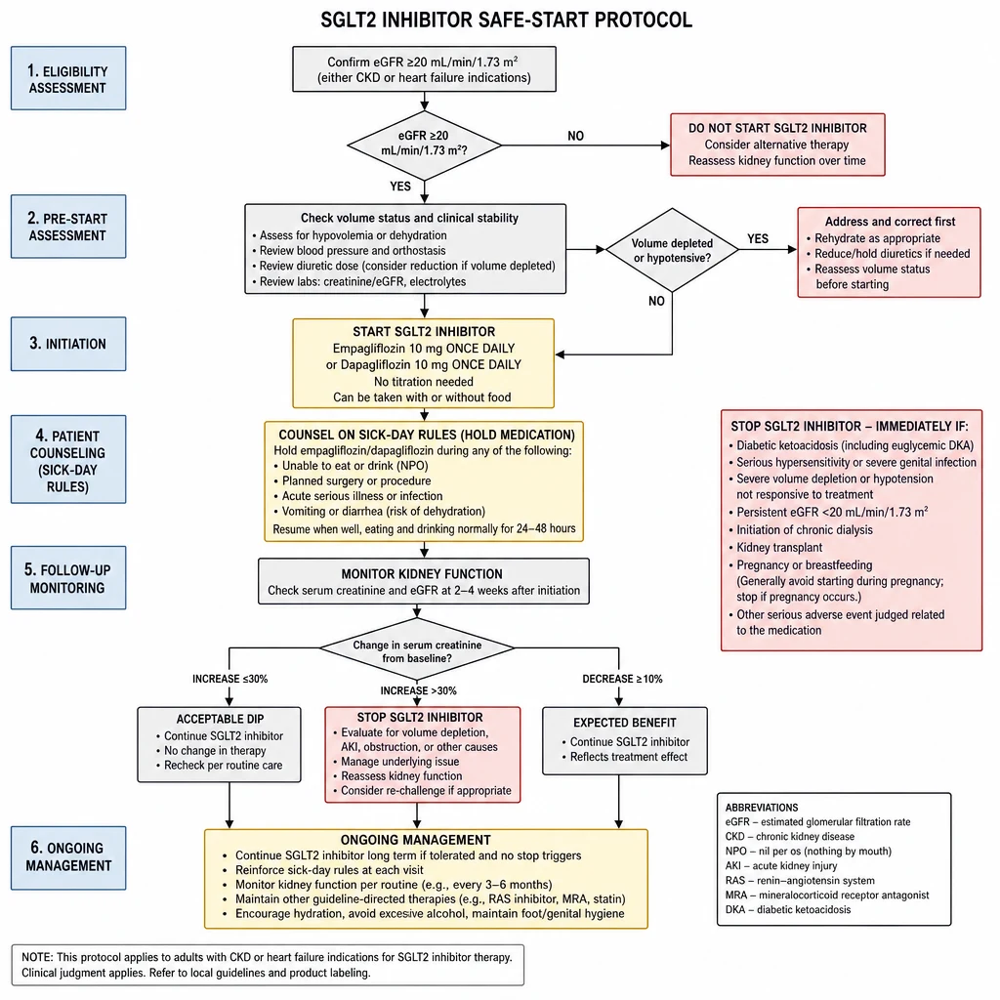
SGLT2i Safe-Start Protocol — pre-start checklist, dosing, sick-day HALT rule, DKA risk, and monitoring schedule (DAPA-CKD / CREDENCE / EMPEROR-Reduced).
Pre-start
Confirm eGFR threshold
CKD / HF benefit (primary indication): eGFR ≥20 mL/min/1.73 m² — no lower limit specified in DAPA-CKD, CREDENCE, EMPEROR-Reduced. Glycemic benefit only: eGFR ≥25–45 depending on agent; check product PI.
Empagliflozin and dapagliflozin retain renoprotective efficacy down to eGFR 20.
Check
Volume status and concurrent medications
Do NOT start if: currently hypovolemic, active acute illness, hospitalized, or on high-dose diuretics without optimization.
Review concurrent insulin/sulfonylurea — may need dose reduction at initiation (hypoglycemia risk).
Note: eGFR will typically dip 3–5 mL/min in first 2–4 weeks. This is hemodynamic (efferent arteriolar relaxation), not structural injury.
Start
Dosing — pick agent based on availability and indication
Take any time, with or without food. Canagliflozin: give before first meal of day.
Counsel
Mandatory sick-day rule — must give every patient in writing
Hold SGLT2i if any of the following occur:
Always hold
NPO / unable to eat · Surgery / major procedure · Contrast media exposure · Active severe infection / sepsis · Prolonged vomiting or diarrhea (>24 h)
Resume when
Eating and drinking normally · No active acute illness · At least 48 h post-procedure · Nephrology clearance if AKI suspected
DKA risk
Euglycemic diabetic ketoacidosis — glucose may be normal
Higher risk: insulin-dependent T1D, prolonged fasting, low-carbohydrate diet, alcohol, recent surgery.
Presentation: nausea, vomiting, abdominal pain, fatigue, ketonemia — blood glucose often 100–200 mg/dL (not dramatically elevated). Action: if suspected, hold SGLT2i, check urine/serum ketones and blood gas, refer to ER.
Counsel
Genital mycotic infections and lower urinary tract
Genital fungal infections (vulvovaginal candidiasis, balanitis): common, especially women. Counsel on hygiene and early OTC antifungal treatment.
Fournier's gangrene (necrotizing fasciitis of perineum): very rare (<1:1,000,000) but serious. Instruct to report any perineal pain, swelling, or erythema immediately.
Canagliflozin: small increased risk of lower-limb amputation in high-risk PAD patients — assess vascular status first.
Monitor
Post-start monitoring schedule
Timepoint
What to check
Expected / Action
2–4 weeks
eGFR, Creatinine, K⁺, BP
eGFR dip ≤30% = acceptable; stabilizes. Do NOT stop for this dip.
3 months
eGFR, HbA1c (if T2D), weight
eGFR should stabilize or improve vs. pre-dip baseline.
Every 6 months
eGFR, K⁺, urinalysis
Ongoing renoprotective monitoring.
Any illness
eGFR, Cr
Hold drug; recheck before resuming.
Stop if
Permanent discontinuation triggers
eGFR <20 (renoprotective efficacy very limited at this level — continue only for HF on specialist advice) · Confirmed Fournier's gangrene · Recurrent DKA · Severe recurrent genital infections refractory to treatment · Leg amputation in patient with established PAD (especially canagliflozin)
Quick Reference — SGLT2i at a Glance
Start at eGFR ≥20; below this, discuss with nephrology
Expected Cr dip at 2–4 weeks: ≤30% = acceptable, do not stop
Sick-day rule: HALT for NPO / surgery / infection / vomiting >24 h
DKA can occur with near-normal glucose — check ketones if symptomatic
Counsel on genital hygiene at every initiation visit
Reduce insulin/SU dose at start if T2D — hypoglycemia risk
Canagliflozin: assess PAD / amputation risk before starting
Resume after illness/procedure: eating normally + 48 h post-procedure
2
ACEi / ARB — Creatinine Rise Interpretation
The single most common reason patients are inappropriately taken off ACEi/ARB is a creatinine bump that is both expected and protective. The key question is: is the rise hemodynamic or structural?
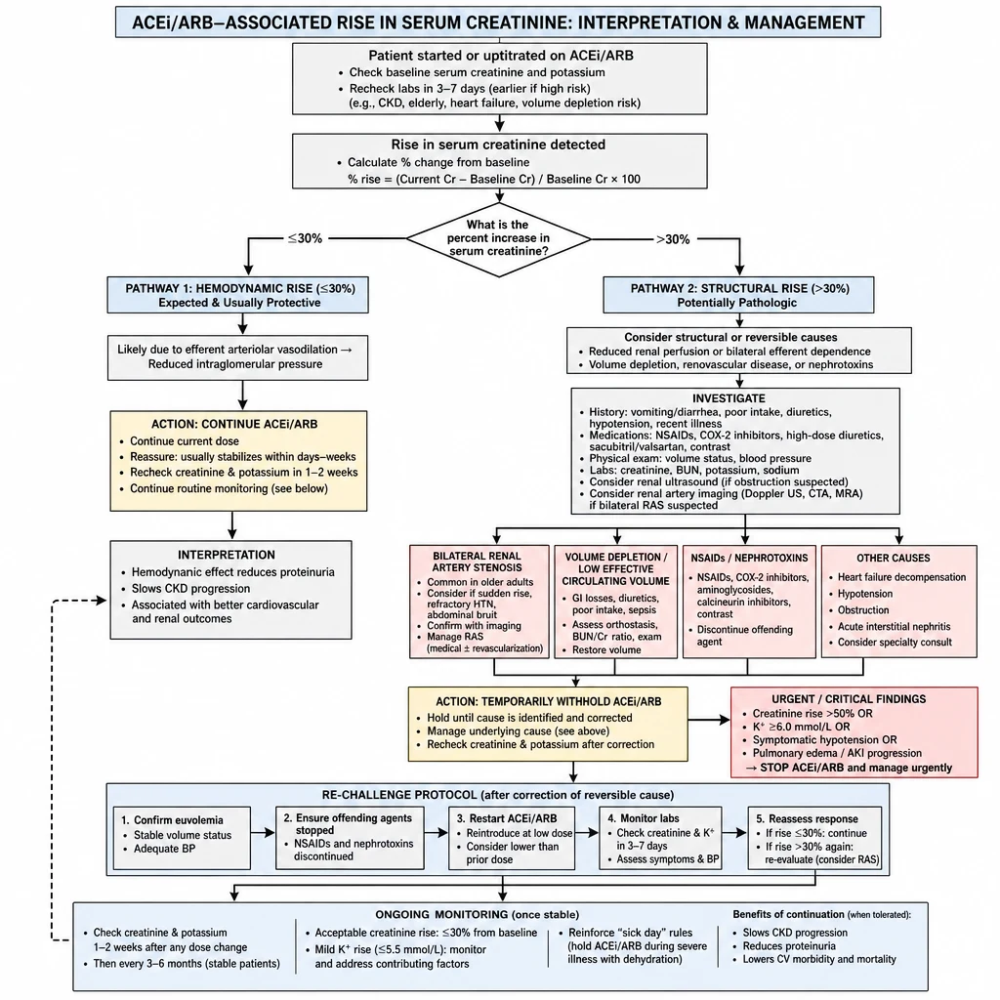
ACEi/ARB Creatinine Rise Framework — hemodynamic (≤30%, continue) vs structural (>30%, investigate). Reversible cause checklist and hold/restart protocol.
The Two-Mechanism Framework
Hemodynamic Rise — Expected & Protective
Mechanism: RAASi reduces efferent arteriolar constriction → lower intraglomerular pressure → transient drop in filtered creatinine.
Rise: ≤30% from baseline within 4 weeks. Stabilizes by: 4–8 weeks.
This is the anti-proteinuric mechanism. Do NOT stop for this rise — doing so removes the protection you prescribed the drug for.
Structural Rise — Investigate & Act
Mechanism: Perfusion failure (bilateral RAS, severe volume depletion) or intrinsic renal injury.
Rise: >30% from baseline within 4 weeks, or rapidly progressive. Does NOT stabilize — continues to worsen.
Identify and correct the reversible cause before restarting; hold drug if rise is severe or progressive.
Trigger
Creatinine rises after ACEi / ARB initiation or dose increase
Measure rise as % change from pre-treatment baseline, not from a random previous value. Confirm with repeat in 1–2 weeks if borderline.
Measure
Quantify the rise
Rise from baseline
Classification
Action
<15%
Acceptable hemodynamic effect
Continue; recheck in 4 weeks
15–30%
Acceptable; monitor closely
Continue; recheck in 2 weeks; check volume status
30–50%
Investigate — likely reversible cause
Identify and correct reversible cause; may continue if correctable
>50% or >1 mg/dL above baseline
Reduce or hold; investigate bilateral RAS
Hold drug; evaluate for structural cause; restart only after resolution
Ask
Look for reversible causes before stopping the drug
Any 3 of: resistant hypertension (≥3 drugs) · sudden Cr rise with ACEi/ARB · peripheral vascular disease or aortic aneurysm · recurrent flash pulmonary edema · asymmetric kidneys on ultrasound (>1.5 cm difference) · bruits on renal auscultation. If suspected: hold ACEi/ARB, refer to nephrology/vascular, order renal artery duplex or CTA.
Re-challenge
How to restart after holding for a reversible cause
1. Correct the reversible cause (rehydrate, remove NSAID, adjust diuretic dose).
2. Wait until Cr returns to within 15% of pre-treatment baseline.
3. Restart at half the previous dose.
4. Recheck Cr in 1–2 weeks.
5. If rise <30% again, continue and uptitrate slowly.
Avoid
Dual RAASi blockade — ACEi + ARB
Do not combine ACEi + ARB (ONTARGET trial: increased AKI, hyperkalemia, hypotension without additional cardiovascular benefit). Combine RAASi with SGLT2i or finerenone instead.
⚠
The proteinuric patient with a Cr dip — do not stop
If a CKD patient on RAASi has a rise in Cr of 20% but proteinuria improves from 1.5 g/day to 0.6 g/day — this is a success, not a failure. The creatinine rise reflects reduced hyperfiltration. Stopping the drug eliminates the anti-proteinuric effect and accelerates CKD progression.
Quick Reference — ACEi/ARB Creatinine Rise
Acceptable rise: ≤30% from baseline within 4 weeks — do not stop
Re-challenge: fix reversible cause → restart at half dose → recheck in 1–2 weeks
Avoid: ACEi + ARB combination (ONTARGET); combine with SGLT2i or finerenone instead
3
RAASi + Hyperkalemia — Mitigation Without Stopping
Stopping RAASi for hyperkalemia trades a short-term fix for long-term harm. The PRIORITIZE-HK trial showed this clearly: patients who stopped had higher mortality and more CV events. The goal is to manage the potassium, not remove the RAASi.
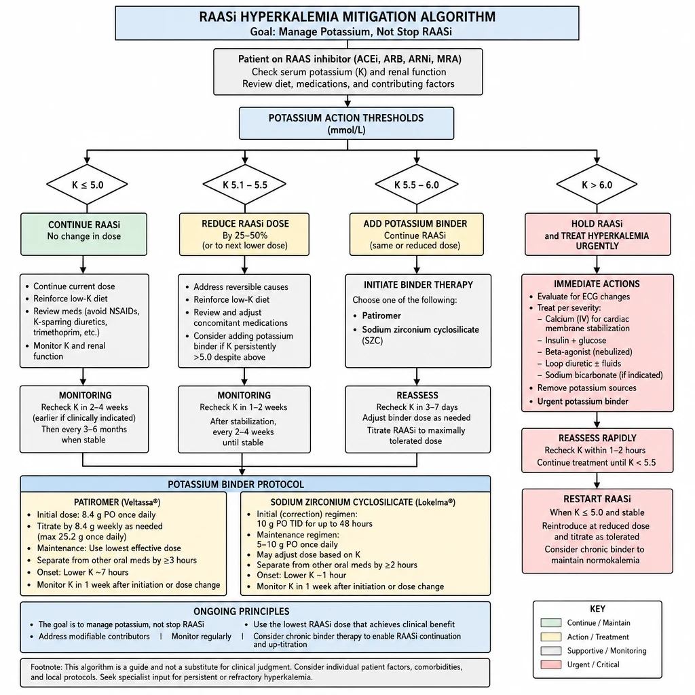
RAASi + Hyperkalemia — K⁺ action ladder (≤5.0→≥6.0), Kalimate vs Kayexalate operational comparison, and RAASi re-uptitration protocol.
Potassium Monitoring — Action Thresholds
K⁺ ≤ 5.0 mEq/L
Continue RAASi at current dose. Reinforce dietary potassium restriction (2–3 g/day). Review and remove unnecessary K⁺-elevating drugs. Recheck K⁺ at next scheduled visit.
K⁺ 5.0–5.4 mEq/L
Continue RAASi. Intensify dietary K⁺ counseling (eliminate high-K⁺ foods: banana, kamote, squash, coconut water). Audit for K⁺-elevating drugs (TMP-SMX, NSAIDs, K⁺-sparing diuretics). Consider adding a potassium binder if persistent.
K⁺ 5.5–5.9 mEq/L
Down-titrate RAASi by 50% (e.g., losartan 100 mg → 50 mg). Add potassium binder. Urgent dietary review. EKG if symptomatic (palpitations, weakness). Repeat K⁺ in 1–2 weeks. Goal: reduce K⁺ <5.5 and re-uptitrate RAASi.
K⁺ ≥ 6.0 mEq/L
Hold RAASi. ECG immediately. Initiate binder for ongoing management. Investigate causes: dietary load, concurrent drugs, acidosis, renal decline. Re-introduce RAASi at lower dose once K⁺ <5.5 — do not abandon permanently without specialist review.
Potassium Binder Operational Guide
Kalimate (Calcium Polystyrene Sulfonate)
Brand: Kalimate (Kowa/MedChoice) · ~₱30–50/sachet (5 g) Dose: 5–15 g QD–TID in water or juice (do not mix with fruit juice high in K⁺). Onset: several hours — not for acute emergency management. Advantage over SPS: exchanges Ca²⁺ for K⁺ (not Na⁺) — preferred in CHF, hypertension, and volume-sensitive patients; minimal sodium loading. SE: constipation (most common — add lactulose if needed); GI upset; hypercalcemia with prolonged high-dose use (monitor Ca²⁺). Avoid in bowel obstruction or ileus. Timing: give 2–3 h away from other oral medications to reduce adsorption interference.
Sodium Polystyrene Sulfonate (Kayexalate / Resonium A)
Dose: 15–60 g/day in divided doses orally or as retention enema (30–60 g in 150 mL water, retain 30–60 min). Onset: 1–2 h (enema) to several hours (oral) — enema route acceptable for subacute management. Caution — sodium load: each gram releases ~3 mEq Na⁺ — avoid or use with caution in CHF, severe HTN, and anasarca. Prefer Kalimate in fluid-overloaded patients. SE: constipation; GI necrosis (rare — avoid in postoperative patients, ileus, or sorbitol co-administration); hypokalemia with overuse. Note: always use sorbitol-free formulations; sorbitol co-administration linked to intestinal necrosis.
Drug audit
Always audit K⁺-elevating concurrent medications first
TMP-SMX — inhibits tubular K⁺ secretion; substitute if possible (e.g., for UTI prophylaxis: nitrofurantoin or cephalexin instead) NSAIDs — reduce aldosterone effect + reduce GFR; always a target for removal Spironolactone / eplerenone — essential in CHF; reduce dose or hold if K⁺ >5.5 Calcineurin inhibitors — tacrolimus > cyclosporine; check levels if hyperkalemia worsens Beta-blockers — mild K⁺-retaining effect; generally continue Heparin (high-dose) — impairs aldosterone synthesis; review in inpatients
Re-uptitrate
Restoring RAASi after temporary dose reduction or hold
1. Confirm K⁺ <5.5 on 2 successive readings (1–2 weeks apart).
2. Ensure patient is on stable dietary restriction and binder if applicable.
3. Restart RAASi at half the last tolerated dose.
4. Recheck K⁺ + Cr in 2 weeks.
5. If K⁺ remains <5.5, uptitrate to full target dose.
Goal: maximum tolerated RAASi dose with K⁺ <5.5 mEq/L.
Quick Reference — Hyperkalemia + RAASi
Default: manage K⁺ to preserve RAASi — do not reflexively stop
GLP-1 agonists showed kidney protection in the FLOW trial (semaglutide). The operational challenge is not starting — it is titrating through GI side effects and watching for volume-depletion-mediated AKI in CKD patients.
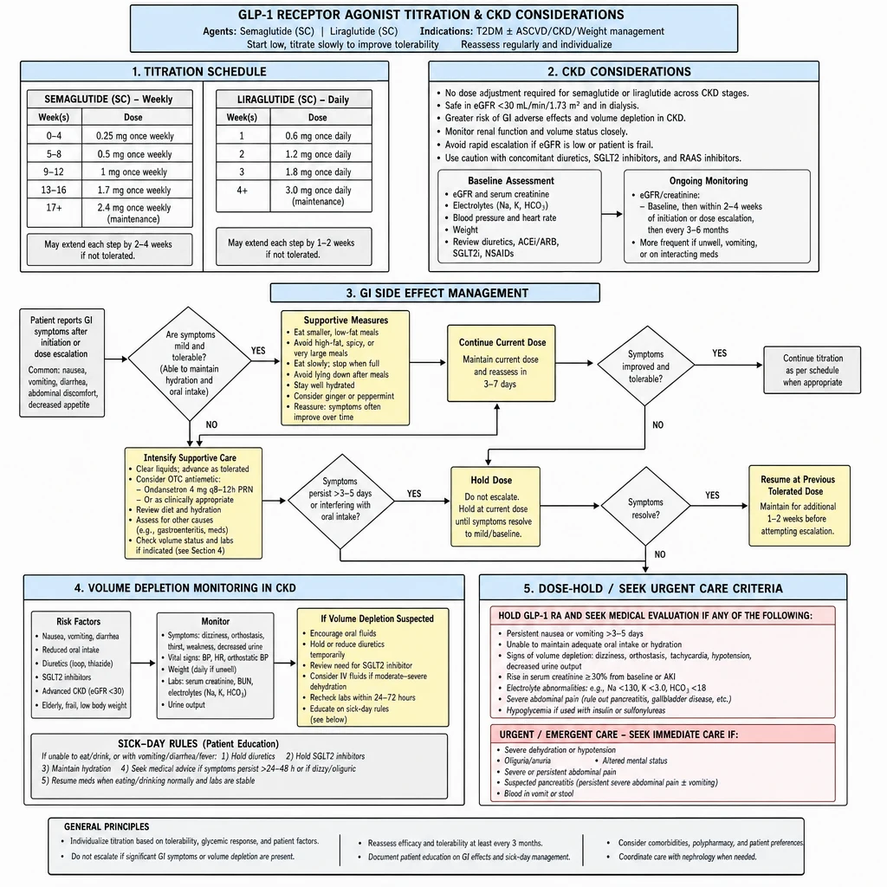
GLP-1 Agonist Titration — semaglutide SC vs oral schedules, GI side-effect management, and CKD volume-depletion AKI monitoring (FLOW trial basis).
Titration Schedules by Agent
Semaglutide SC (Ozempic / Wegovy)
Wks 1–4
0.25 mg SC once weekly
Same day each week, any time
Wks 5–8
0.5 mg SC once weekly
Minimum 4 weeks at 0.25 mg first
Wks 9+
1.0 mg SC once weekly
Increase only if HbA1c / weight targets not met
Max
2.0 mg SC once weekly
After ≥4 weeks at 1.0 mg; also available as Wegovy 2.4 mg for weight management
PH brands: Ozempic, Wegovy (Novo Nordisk). Refrigerate 2–8 °C; after first use, room temp <30 °C × 56 days.
Semaglutide Oral (Rybelsus)
Wks 1–4
3 mg QD oral
Empty stomach, ≤4 oz water, wait 30 min before food
Wks 5–8
7 mg QD oral
Must complete full 4 weeks at 3 mg
Wks 9+
14 mg QD oral
Max approved oral dose; ~75% bioavailability of 0.5 mg SC
Oral and SC semaglutide are NOT dose-interchangeable. PH brands: Rybelsus (Novo Nordisk). Store at room temp <30 °C.
Tirzepatide (Mounjaro) — GIP + GLP-1 dual agonist
Wks 1–4
2.5 mg SC once weekly
Any day, any time; auto-injector pen
Wks 5–8
5 mg SC once weekly
Minimum 4 weeks at 2.5 mg before increasing
If needed
7.5 → 10 → 12.5 → 15 mg SC weekly
Increase every ≥4 weeks; max 15 mg; no renal dose adjustment
PH brands: Mounjaro (Eli Lilly). Refrigerate 2–8 °C; after first use, room temp <30 °C × 21 days.
Dulaglutide (Trulicity)
Wks 1–4
0.75 mg SC once weekly
Any day, any time; auto-injector pen
Wks 5–8
1.5 mg SC once weekly
If needed
3.0 → 4.5 mg SC once weekly
Approved for higher doses in T2D weight management
PH brands: Trulicity (Eli Lilly). Refrigerate 2–8 °C; after first use, room temp <30 °C × 14 days.
GI Side Effect Management
GI
Nausea / vomiting is the most common reason patients stop — manage proactively
Inject at bedtime (nausea peaks 2–4 h post-dose → while asleep).
Avoid large, fatty, or spicy meals within 2 h of injection or oral dose.
Slower titration: stay at each dose level for 6–8 weeks instead of 4 if GI-limited. Antiemetics: ondansetron 4–8 mg PRN or metoclopramide 5–10 mg before meals; use short-term.
Persistent vomiting >24 h → hold drug (AKI risk from dehydration; see below).
AKI risk
CKD-specific: volume-depletion AKI from nausea and reduced intake
Patients with CKD are volume-sensitive. Nausea → reduced oral intake → relative dehydration → afferent arteriolar constriction → AKI. Counsel explicitly: if not tolerating fluids for >24 h, hold GLP-1 agonist and seek medical attention.
Monitor: eGFR at baseline, 4 weeks, 3 months after initiation.
Pancreatitis
Suspend if epigastric pain + elevated amylase/lipase
GLP-1 agonists are associated with a modest increase in pancreatitis risk (absolute risk is low).
Hold if: persistent epigastric pain radiating to back, amylase/lipase >3× ULN.
Discontinue permanently if confirmed pancreatitis.
CKD dosing
No dose adjustment needed for eGFR — but monitor more closely
Semaglutide, tirzepatide, dulaglutide: no renal dose adjustment — eliminated non-renally.
Reduce concurrent insulin dose by 10–20% at initiation; reduce sulfonylurea by 50% or more to avoid hypoglycemia.
Check eGFR at 4 weeks and 3 months — GLP-1 can improve eGFR over time (FLOW data).
💡
Hold rules — when to pause GLP-1 agonists
Hold 24 h before elective surgery requiring general anesthesia (delayed gastric emptying → aspiration risk)
Hold during acute illness with vomiting or inability to hydrate
Hold if pancreatitis suspected (persistent epigastric pain)
Hold if significant volume depletion suspected (syncope, orthostasis, Cr rising)
Loop diuretic resistance is one of the most frustrating problems in managing fluid-overloaded CKD and heart failure patients. The solution is not increasing the dose indefinitely — it is sequential nephron blockade and understanding bioavailability differences between loop agents.
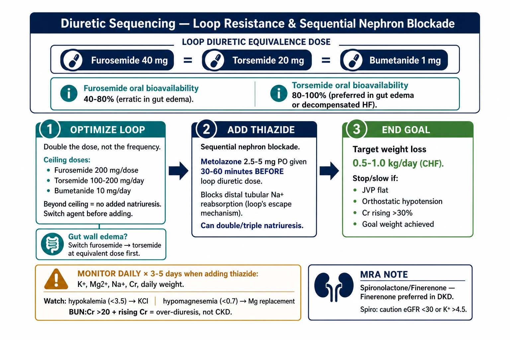
Diuretic Sequencing — loop equivalence doses, furosemide→torsemide switch rationale, metolazone timing (30–60 min before loop), electrolyte monitoring schedule, and end-goal criteria.
Loop Diuretic Equivalence & Bioavailability
40 mg
Furosemide
PH brands: Lasix (Sanofi), generic. Oral bioavailability 40–80%; erratic in gut edema. ~₱2–5/tab.
20 mg
Torsemide
PH brands: Demadex, generics (limited availability). Oral bioavailability 80–100%; preferred in decompensated HF or gut edema.
1 mg
Bumetanide
PH brands: Burinex (limited availability). High bioavailability; short half-life; may need BID.
💡
When to switch from furosemide to torsemide
If patient has gut wall edema from fluid overload, oral furosemide absorption drops unpredictably. Torsemide's superior oral bioavailability means the switch alone — at equivalent dose — often produces markedly better diuresis. Try this before escalating dose or adding metolazone.
Step 1
Optimize loop diuretic — dose to ceiling, not frequency alone
Double the dose if no response within 2–3 hours of a loop dose (not the frequency). Ceiling doses beyond which no additional natriuresis occurs:
Furosemide: 200 mg/dose IV or PO (up to 400 mg/day) · Torsemide: 100–200 mg/day · Bumetanide: 10 mg/day
Beyond ceiling → switch agent or add thiazide; more of the same drug will not help.
Step 2
Add thiazide — sequential nephron blockade when loop diuretic is at ceiling
Mechanism: loop diuretics cause compensatory Na⁺ reabsorption in the distal tubule. Thiazide blocks this escape mechanism, synergizing with the loop.
Agent of choice: Metolazone 2.5–5 mg PO, given 30–60 minutes BEFORE the loop diuretic dose. PH brands: Metoz (~₱40–60/tab; limited supply — stock up). Chlorthalidone or hydrochlorothiazide 25–50 mg are alternatives when metolazone is unavailable.
Effect: can double or triple natriuresis. The combination is powerful — expect significant electrolyte losses.
Monitor
Electrolyte monitoring during sequential nephron blockade
Check daily for the first 3–5 days of thiazide addition: K⁺, Mg²⁺, Na⁺, Cr, weight. Watch for:
Hypokalemia (<3.5 mEq/L) → oral KCl supplementation; IV if <3.0 with symptoms
Hypomagnesemia (<0.7 mEq/L) → oral Mg or IV if severe; hypomagnesemia perpetuates hypokalemia
Hyponatremia — if Na⁺ falling acutely, reduce thiazide dose
Pre-renal azotemia: BUN:Cr ratio >20 with rising Cr → over-diuresis → back off diuretics
End goal
Clinical endpoints for diuresis — when to stop or slow
Target weight loss: 0.5–1.0 kg/day in CHF; faster in acute pulmonary edema (supervised setting). Stop or slow if: JVP flat / undetectable, orthostatic hypotension, Cr rising >30%, symptomatic dizziness, goal weight achieved. Maintenance: once dry weight achieved, switch to once-daily furosemide or torsemide at lowest effective dose.
MRA use
Mineralocorticoid receptor antagonists in CKD + CHF
Spironolactone / eplerenone: useful in CHF (HFrEF) for mortality benefit AND for hyperaldosteronism-driven hypokalemia. Caution: eGFR <30 mL/min or K⁺ >4.5 → use only with careful monitoring + binder backup. Finerenone (Kerendia): non-steroidal MRA; approved for DKD; significantly less hyperkalemia than spironolactone; safer in CKD G3–G4.
Quick Reference — Diuretic Sequencing
Torsemide > furosemide in gut edema (better oral bioavailability)
Double the dose before increasing frequency (hit the ceiling)
Metolazone: 2.5–5 mg, give 30–60 min BEFORE loop diuretic
Daily electrolytes × 3–5 days when adding thiazide
BUN:Cr >20 + rising Cr = over-diuresis, not CKD progression
Finerenone preferred over spironolactone in CKD + DKD
6
Phosphate Binder Timing Strategies
Binders only work if taken at the right time. A patient taking calcium carbonate between meals (as an antacid) gets no phosphorus binding — they just accumulate calcium. The most impactful intervention is often just fixing the timing.
Phosphate binders must be taken with meals or immediately after (within 15 minutes). Dietary phosphorus appears in the gut lumen only when food is being digested. A binder taken 2 hours later, or between meals, binds nothing useful — it is an empty dose.
500 mg TID. Dark/black stools are expected — warn patients this is not blood. Very low iron absorption.
Iron overload; hemochromatosis
Calcium Load Tracking
Calculate
Total daily calcium = dietary + binder-derived
KDIGO target: total calcium <2,000 mg/day from all sources.
Dietary calcium: typical Filipino diet provides ~600–800 mg/day.
Binder calcium: calcium carbonate 500 mg elemental Ca per 1,250 mg tablet; 3 tabs/day = 1,500 mg. Combined: 600 + 1,500 = 2,100 mg → over target → switch to non-calcium binder.
Switch trigger
When to transition from calcium-based to non-calcium binder
Total calcium >2,000 mg/day · Serum Ca consistently >10.2 mg/dL · Active vascular/coronary calcification on imaging · Co-existing adynamic bone disease · Calcitriol/active vitamin D requirement (worsens calcium load).
Drug interactions
Separate binders from these medications
Fluoroquinolones — chelated by calcium and iron-based binders → give antibiotic ≥2 h before or 6 h after binder Levothyroxine — calcium reduces absorption → separate by ≥4 h (ideally take thyroid med morning, fasting) Mycophenolate mofetil — sevelamer may reduce levels → take MMF ≥2 h before sevelamer Oral iron supplements — avoid co-administration with calcium or sevelamer → separate by ≥2 h
Snack strategy
Binder dosing with snacks — the underrated intervention
Most patients take binders with 3 main meals only. But a high-phosphorus snack (crackers with cheese, chips, processed food) consumed without a binder contributes significantly to daily phosphorus load.
Review the patient's snack pattern. If they eat 2+ phosphorus-significant snacks, prescribe a small binder dose (e.g., 1 tab sevelamer or half-dose CaCO₃) with those snacks.
Quick Reference — Binder Timing
All binders: with meals or within 15 min after — never between meals
CaCO₃ between meals = antacid, not phosphate binder
Lanthanum: must chew completely; not swallowed whole
Sevelamer: also lowers LDL; avoid in dysphagia/bowel obstruction
Fluoroquinolones: separate from binders by ≥2–6 h (chelation)
Levothyroxine: separate from calcium binders by ≥4 h
Total calcium target: <2,000 mg/day (diet + binders combined)
7
ESA Adjustment Logic — Iron First, Then Dose
The single most common ESA prescribing error is escalating the dose without replenishing iron. ESAs are futile in iron deficiency — they accelerate iron utilization and deepen the deficiency. Always address iron before touching the ESA dose.
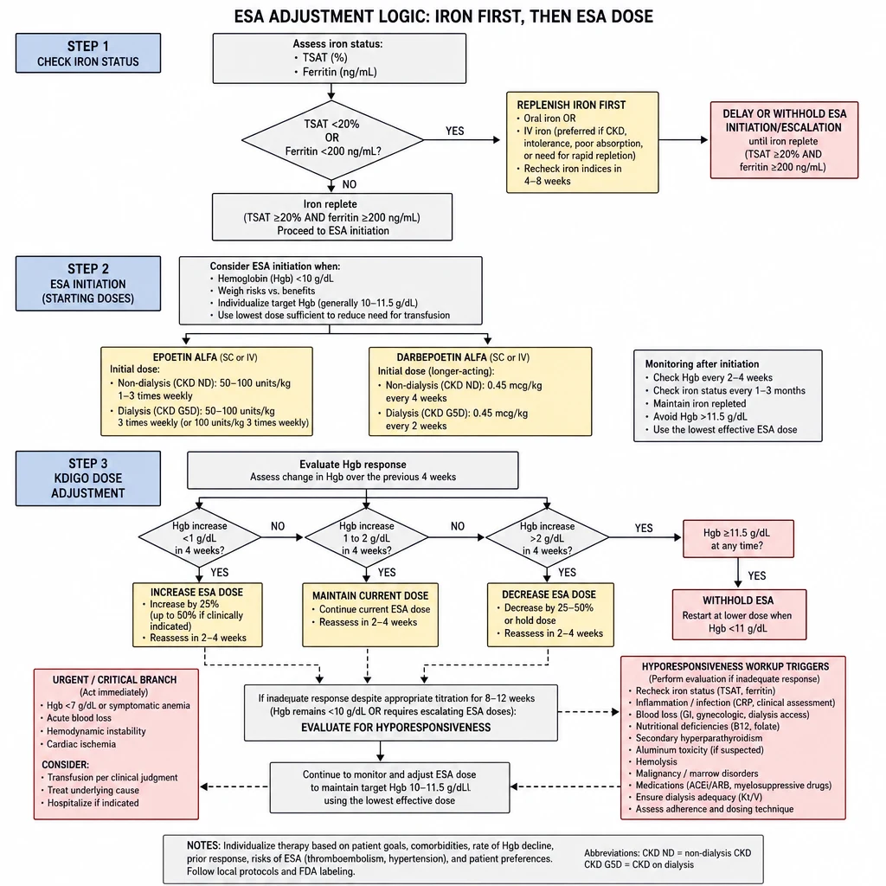
ESA Adjustment Logic — iron-first rule (TSAT/ferritin targets), IV iron options, starting doses by agent and modality, and Hgb-based adjustment ladder (KDIGO).
🔴
Iron first — always evaluate before adjusting ESA dose
If TSAT <20% or ferritin <200 ng/mL (dialysis) or <100 ng/mL (non-dialysis), replete iron before escalating ESA. Escalating ESA in iron-deficient state wastes medication and can cause functional iron deficiency with treatment failure.
Iron Repletion Before ESA
Iron Targets Before Starting/Escalating ESA
Dialysis patients: ferritin >200 ng/mL AND TSAT >20%. Non-dialysis CKD: ferritin >100 ng/mL AND TSAT >20%.
Oral iron: ferrous sulfate 325 mg (65 mg elemental Fe) QD–TID. Take on empty stomach for best absorption. Separate from phosphate binders by ≥2 h. Common GI side effects → consider ferrous gluconate if intolerant.
Iron sucrose (Venofer) 100–200 mg IV per session, over 15–30 min Ferric carboxymaltose (Ferinject) 500–1,000 mg single IV infusion (outpatient-friendly) Ferumoxytol 510 mg IV, may give 1,020 mg at once
Recheck iron indices (TSAT, ferritin) 4–6 weeks after completing IV iron course.
ESA Starting Doses
Agent
Non-dialysis CKD
Hemodialysis
Peritoneal Dialysis
Epoetin alfa (Eprex, Hemapo)
50–80 IU/kg SC 3×/week
50–100 IU/kg SC/IV 3×/week
50–80 IU/kg SC 3×/week
Darbepoetin alfa (Aranesp)
0.45 mcg/kg SC Q4 weeks
0.6–0.75 mcg/kg SC/IV Q2 weeks
0.45–0.6 mcg/kg SC Q2–4 weeks
Mircera (C.E.R.A.)
0.6 mcg/kg SC Q2 weeks initially
0.6 mcg/kg SC/IV Q2 weeks initially
0.6 mcg/kg SC Q2 weeks initially
All: once Hgb is stable in target range (10–11.5 g/dL), Mircera may be given Q4 weeks. Reduce insulin dose if using SC epoetin (injection-site effect).
ESA Dose Adjustment Framework (KDIGO)
Hgb > 13.0 g/dL
HOLD ESA immediately. This level carries thrombotic and stroke risk (TREAT, CHOIR trial data). Resume at 25% lower dose once Hgb falls below 12 g/dL. Document reason for hold in chart.
Hgb 12.0–13.0 g/dL
Reduce dose by 25%. Approaching upper safe limit. Recheck Hgb in 4 weeks.
Hgb 10–11.5 g/dL
Maintain current dose. Target range achieved. Recheck Hgb monthly (dialysis) or every 2–3 months (non-dialysis). Confirm iron indices remain replete.
Hgb 8.0–10.0 g/dL
Increase dose by 25%. First re-check iron indices — is TSAT <20%? Treat iron deficiency before escalating ESA dose. If iron replete, increase ESA by 25%.
Hgb < 8.0 g/dL
Check iron + hyporesponsiveness causes. Consider transfusion if symptomatic. IV iron if deficient. Increase ESA by 25–50%. Investigate actively — don't just escalate ESA dose alone.
⚠
Rapid rise rule — reduce dose proactively
If Hgb rises >1 g/dL in 2 weeks or >2 g/dL in 4 weeks → reduce ESA by 25%, even if still in target range. Rapid rise is associated with worse outcomes (hypertension, thrombosis). A controlled, gradual rise to target is the goal.
Hyporesponsiveness Work-Up
Definition: Hgb below target despite epoetin >300 IU/kg/week (or darbepoetin >1.5 mcg/kg/week) for ≥4 weeks, with iron replete. Do NOT simply escalate dose further without work-up.
Step 1
Recheck iron status — this is still the most common cause
TSAT and ferritin: functional iron deficiency can exist even with normal ferritin during active inflammation. If TSAT <20%, treat iron before anything else.
Step 2
Assess for inflammation or infection
CRP, ESR — inflammatory cytokines suppress erythropoiesis at the marrow level. Treat the underlying infection or inflammatory condition. ESA dose escalation will not overcome active inflammation.
Step 3
Dialysis adequacy (dialysis patients)
Check Kt/V. Uremic milieu at Kt/V <1.2 directly suppresses bone marrow response. Optimize dialysis before further ESA escalation.
Step 4
Secondary hyperparathyroidism and aluminum toxicity
PTH >600 pg/mL: myelofibrosis from severe secondary HPT reduces marrow cellularity → ESA hyporesponsiveness. Treat HPT first. Aluminum: suspect in patients using aluminum-based antacids long-term or older water systems. Check aluminum level; treat with deferoxamine if elevated.
Step 5
Occult blood loss, hemolysis, or malignancy
Unexplained Hgb drop despite ESA + iron: occult GI bleed (check fecal occult blood, consider endoscopy), hemolysis (LDH, haptoglobin, blood smear), or hematologic malignancy (bone marrow aspirate if all else negative).
Rare
Pure red cell aplasia (anti-ESA antibodies)
Very rare but serious: sudden, severe anemia with reticulocytopenia in a patient on ESA for months. Confirm with anti-erythropoietin antibody assay. STOP all ESA immediately (cross-reactive). Refer to hematology; treat with immunosuppression. Never use a different ESA agent — antibodies cross-react.
📖
Further reading — ESA, iron targets, and Ganzoni calculator
For full ESA selection rationale, iron repletion protocols, hemoglobin goal evidence, and an interactive Ganzoni iron-dose calculator, see the standalone guide: Anemia Management in CKD →
Quick Reference — ESA Adjustment Logic
Iron before ESA — always check TSAT + ferritin first
Target Hgb: 10–11.5 g/dL — never target >13
Hold if Hgb >13; resume at 25% lower dose when <12
Rapid rise >1 g/dL in 2 weeks → reduce dose 25%
Hyporesponsive: iron → CRP → Kt/V → PTH → Al → blood loss → PRCA
PRCA (anti-ESA antibodies): stop all ESAs, test for antibodies
IV iron: ferric carboxymaltose 500–1,000 mg single dose (convenient)
Dialysis: recheck iron indices monthly when on ESA
8
Mineralocorticoid Receptor Antagonists — Finerenone vs. Spironolactone
Two very different drugs targeting the same receptor. Spironolactone is steroidal and potent — effective in HFrEF and hyperaldosteronism but carries significant hyperkalemia and hormonal side-effect risk in CKD. Finerenone is non-steroidal — purpose-built for DKD with a far better safety profile in renal patients.
Indication: Diabetic kidney disease with eGFR ≥25 + UACR ≥300 mg/g, on maximally tolerated ACEi or ARB.
Start dose: 10 mg OD with food. Recheck K⁺ and eGFR at 4 weeks. Uptitrate to: 20 mg OD if K⁺ ≤4.8 mEq/L at 4-week check.
Hold if: K⁺ >5.0 mEq/L before starting; hold and recheck if K⁺ rises >5.5 on therapy. CYP3A4 substrate: avoid grapefruit juice; avoid strong 3A4 inhibitors (azole antifungals, clarithromycin). Dose-halve with moderate 3A4 inhibitors if unavoidable.
Advantages over spironolactone in CKD: ~40% less hyperkalemia; no gynecomastia or menstrual effects; no progesterone/androgen receptor cross-reactivity.
PH brands: Firialta (Bayer) · ~₱350–450/tab · No refrigeration.
Spironolactone (Aldactone) — steroidal MRA
Indications: HFrEF with EF ≤35% (RALES/EMPHASIS-HF mortality benefit); resistant hypertension; primary hyperaldosteronism; ascites in cirrhosis; K⁺-sparing diuresis.
Start dose: 12.5–25 mg OD in CKD. Titrate to 50 mg OD (HFrEF) if K⁺ tolerated.
Use with caution if: eGFR <30 (significant K⁺ accumulation risk); K⁺ >4.5 at baseline; on other K⁺-retaining agents. Avoid if: eGFR <30 without close monitoring + binder backup; K⁺ ≥5.0 at baseline.
Side effects: Gynecomastia and breast tenderness (men); menstrual irregularity (women) — dose-dependent; switch to eplerenone if intolerable (less hormonal SE, less evidence in HFrEF).
PH brands: Aldactone (Pfizer), generic · ~₱15–30/tab · No refrigeration.
Which Agent — Decision Guide
Use finerenone
DKD + CKD + T2DM — the primary indication
Patient has T2DM + CKD with UACR ≥300 + eGFR 25–75, already on ACEi or ARB at maximum tolerated dose. K⁺ ≤4.8 at baseline. FIDELIO-DKD and FIGARO-DKD showed significant reduction in CKD progression, CV events, and hospitalization for heart failure.
Use spironolactone
HFrEF, resistant HTN, hyperaldosteronism, ascites
HFrEF with EF ≤35% — spironolactone has the mortality trial data (RALES: 30% mortality reduction). Primary hyperaldosteronism — spironolactone is the medical treatment of choice. Resistant hypertension (3rd or 4th agent). Cirrhotic ascites. Use finerenone only if hormonal SE or hyperkalemia intolerance is the issue in a patient who otherwise needs an MRA.
Monitoring — both agents
K⁺ and eGFR at 1–4 weeks after start, then every 3–6 months
K⁺ on therapy
Action
≤5.0 mEq/L
Continue; uptitrate finerenone to 20 mg if still at 10 mg
5.0–5.5 mEq/L
Reduce dose by 50%; dietary K⁺ review; add binder if needed
>5.5 mEq/L
Hold; ECG; manage hyperkalemia; restart at lower dose once K⁺ <5.0
Do not combine
Finerenone + spironolactone — additive hyperkalemia, no added benefit
Do not combine two MRAs. Do not combine either MRA with eplerenone. If a patient is already on spironolactone for HFrEF and develops DKD, the clinical team must decide which indication takes priority and choose one agent at a time with careful K⁺ monitoring.
Quick Reference — MRA Selection
Finerenone: DKD + eGFR ≥25 + UACR ≥300 + on max ACEi/ARB
Start finerenone only if K⁺ ≤4.8; uptitrate 10→20 mg at 4 weeks if K⁺ ≤4.8
Anticoagulation in CKD — DOAC Selection & Dose Adjustment
CKD patients have both increased bleeding and increased clotting risk — the management paradox. DOAC selection hinges on the degree of renal clearance of each agent. Dabigatran is the most dangerous in CKD; apixaban has the least renal exposure and is generally preferred.
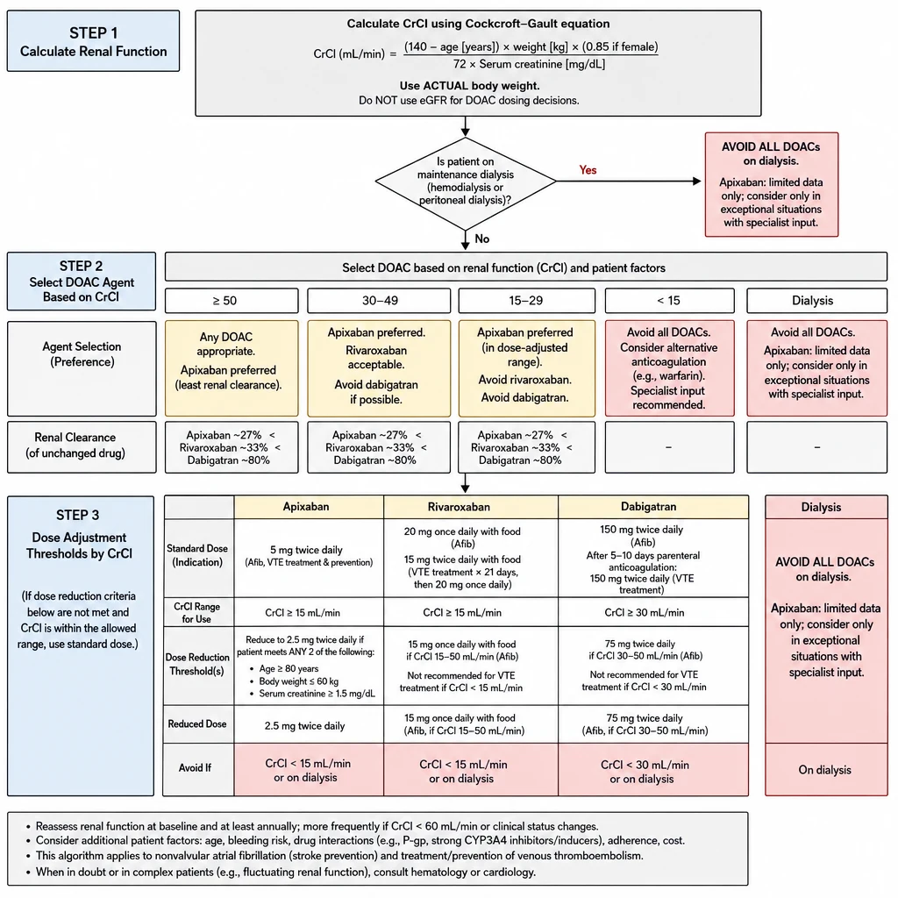
DOAC Selection in CKD — CrCl (Cockcroft-Gault) not eGFR, apixaban preferred (~27% renal), dabigatran avoided (85% renal), full agent comparison, and warfarin/heparin indications.
⚠
Use CrCl (Cockcroft-Gault), not eGFR, for DOAC dosing
All DOAC product inserts use CrCl by Cockcroft-Gault for dose adjustment — not CKD-EPI eGFR. In elderly or low-muscle-mass patients, CrCl may be significantly lower than eGFR. Always calculate CrCl before selecting DOAC dose.
DOAC Comparison — Renal Clearance & CKD Dosing
Agent
Renal clearance
Standard dose (AF)
CKD dose adjustment
PH brands
Apixaban Preferred in CKD
~27%
5 mg BID
Reduce to 2.5 mg BID if ≥2 of: age ≥80, weight ≤60 kg, SCr ≥1.5 mg/dL. Emerging data support use in dialysis.
Eliquis (BMS/Pfizer) ~₱80–110/tab
Rivaroxaban
~35%
20 mg OD with evening meal
Reduce to 15 mg OD if CrCl 15–50 mL/min. Avoid if CrCl <15.
Xarelto (Bayer/J&J) ~₱120–160/tab
Edoxaban
~50%
60 mg OD
Reduce to 30 mg OD if CrCl 15–50 mL/min, weight ≤60 kg, or P-gp inhibitor co-use. Avoid CrCl <15.
Lixiana (Daiichi) ~₱130–170/tab
Dabigatran Avoid in CKD G4–5
80–85%
150 mg BID
Use 110 mg BID if CrCl 30–50 + high bleed risk. Avoid if CrCl <30. Not for dialysis. Highest accumulation risk of all DOACs.
Pradaxa (Boehringer) ~₱90–130/tab
Warfarin in CKD — When & How
When warfarin remains the choice
Mechanical heart valves: DOACs are contraindicated — warfarin only. Target INR 2.5–3.5 (mitral) or 2.0–3.0 (aortic bileaflet).
Dialysis + AF (where apixaban data insufficient): warfarin remains standard in some centres, though calciphylaxis and vascular calcification risk are concerns.
Antiphospholipid syndrome (triple positive): warfarin is superior to DOACs; target INR 2.5–3.5 in high-risk thrombotic APS.
Sensitivity: CKD patients require lower warfarin doses — reduced vitamin K intake, impaired hepatic metabolism, altered protein binding.
Calciphylaxis risk: warfarin inhibits matrix Gla protein (vitamin K-dependent) — promotes vascular and soft tissue calcification. In CKD G4–5 and dialysis patients with CaxP above target, consider DOAC or warfarin minimization.
TTR target: time in therapeutic range (INR 2–3) should be >70%. Poor TTR increases both stroke and bleeding risk. If TTR <65% consistently → switch to apixaban if eligible.
Drug interactions: antibiotics (especially metronidazole, fluoroquinolones), antifungals, statins all potentiate warfarin. Recheck INR 5–7 days after any antibiotic course.
Heparin & LMWH in CKD
UFH preferred
Unfractionated heparin — use when CrCl <30 or AKI
UFH is not renally cleared — eliminated via RES and endothelium. Safe at any level of renal function. Monitor aPTT 1.5–2.5× normal. Preferred in inpatient AKI, bridging in advanced CKD, and HD circuit anticoagulation. PH brands: generic UFH (5,000 IU/mL vials, widely available).
LMWH — adjust in CKD
Enoxaparin accumulates — dose-reduce and monitor anti-Xa
Enoxaparin (Clexane, Lovenox) is ~40% renally cleared. In CrCl <30: reduce to 1 mg/kg SC q24h (not q12h) for therapeutic dosing; 20–30 mg q24h for prophylaxis. Check anti-Xa level 4 h after 3rd dose (therapeutic target: 0.5–1.0 IU/mL). Do not use LMWH in dialysis without anti-Xa monitoring. PH brands: Clexane (Sanofi) · ~₱400–700/syringe.
AF in dialysis
No consensus — individualize based on stroke vs. bleed risk
Dialysis patients are excluded from major DOAC trials. Options: Apixaban 2.5 mg BID — emerging observational data; preferred by many nephrologists over warfarin in dialysis AF. Warfarin — traditional choice; concern for calciphylaxis and coronary calcification acceleration. Dabigatran / Rivaroxaban / Edoxaban — avoid in dialysis (accumulation, no reversal data).
Decision should factor CHA₂DS₂-VASc score, HAS-BLED score, and patient-specific calcification burden.
Quick Reference — Anticoagulation in CKD
Use Cockcroft-Gault CrCl — not eGFR — for DOAC dosing
Apixaban: lowest renal clearance (27%); preferred DOAC in CKD
Dabigatran: 80–85% renal — avoid if CrCl <30
Warfarin: still required for mechanical valves and triple-positive APS
UFH: not renally cleared; safe in any CrCl, AKI, or dialysis
Enoxaparin in CrCl <30: 1 mg/kg q24h + anti-Xa monitoring
Warfarin: watch for calciphylaxis risk in CKD G4–5 + dialysis
10
Anti-Hyperglycemic Drugs — CKD to Dialysis Transition
As eGFR falls from G3b through G5 into dialysis, almost every non-insulin glucose-lowering drug requires dose reduction, substitution, or outright cessation. Insulin becomes the cornerstone — but its own dosing must be reduced by up to 50% before dialysis starts, then recalibrated again based on modality (HD vs. PD behave oppositely).
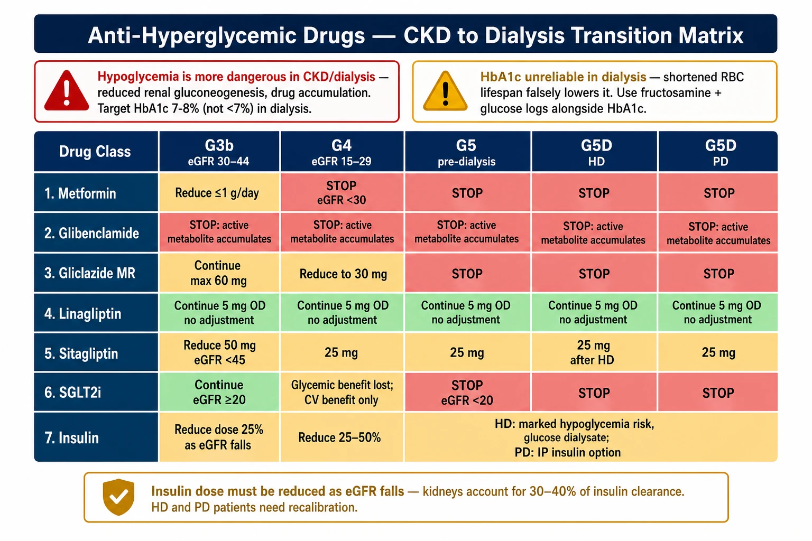
Anti-Hyperglycemic Transition Matrix — stop/adjust/continue from G3b through HD and PD; HbA1c unreliability in dialysis; insulin dose reduction framework.
🔴
Two principles that override all others
1. Hypoglycemia is more dangerous in CKD/dialysis — reduced renal gluconeogenesis, unpredictable oral intake, drug accumulation. Target HbA1c 7–8% (not <7%) in dialysis; avoid aggressive lowering. 2. HbA1c is unreliable in dialysis — shortened red cell lifespan falsely lowers it. Use fructosamine or glucose logs alongside HbA1c in G5D patients.
Glycemic benefit lost; continue only for CV/HF benefit if eGFR ≥20
STOP (eGFR <20)
STOP
STOP
GLP-1 agonists
Continue — no renal dose adjustment
Continue
Continue; monitor volume status
Continue — no adjustment
Continue — no adjustment
Pioglitazone
Continue if no edema/CHF
Caution — fluid retention; avoid if volume-overloaded
Avoid — incompatible with fluid targets
Avoid
Avoid
Repaglinide
Continue — biliary excretion; no renal clearance
Continue; start low (0.5 mg)
Continue with monitoring
Continue; skip dose if meal skipped
Continue; skip dose if meal skipped
Insulin
Reduce TDD by 15–25%
Reduce TDD by 25–40%
Reduce TDD by 40–50%
Further adjust — see HD protocol below
Usually increase — see PD protocol below
Drug-Class Notes
Metformin
Stop at eGFR <30 — lactic acidosis risk
Metformin is renally cleared; impaired clearance → accumulation → lactic acidosis (rare but lethal). FDA contraindication: eGFR <30. Also hold ≥48 h before iodinated contrast if eGFR <60. Do not restart after contrast until eGFR confirmed stable. PH brands: Glucophage (Merck), generic · ~₱3–8/tab.
Sulfonylureas
Glibenclamide: stop at G3b. Gliclazide: last SU standing — stop at G5
Glibenclamide (Daonil, Euglucon) — active metabolites (M1, M2) are renally cleared; accumulate causing prolonged hypoglycemia. Stop at eGFR <45. Highest-risk SU in CKD. Glimepiride (Amaryl) — active M1 metabolite; renally excreted. Reduce dose at G3b; stop at G4. Gliclazide MR (Diamicron MR) — inactive metabolites; safest SU in CKD. Max 60 mg at G3b; reduce to 30 mg at G4; stop at G5. Still carries hypoglycemia risk — skip dose if meal is missed.
On dialysis: all sulfonylureas avoided — irregular meal patterns + uremic anorexia = unpredictable hypoglycemia risk.
DPP-4 Inhibitors
Linagliptin: use freely across all stages. Others: dose-reduce as shown in matrix
Linagliptin (Trajenta) — biliary/fecal excretion; zero renal clearance; 5 mg OD regardless of eGFR or dialysis modality. First-choice DPP-4i in CKD. No supplemental dosing after HD. Sitagliptin (Januvia) — 87% renally excreted; dose-reduce to 50 mg at eGFR <45, 25 mg at eGFR <30/dialysis. On HD: give after each session (dialysed partially). Vildagliptin (Galvus) — 85% renally excreted; reduce to 50 mg OD (skip afternoon dose) when eGFR <50. PH brands: Trajenta (Boehringer) ~₱60–80/tab · Januvia (MSD) ~₱70–90/tab · Galvus (Novartis) ~₱55–75/tab.
Repaglinide
Biliary excretion — one of the few oral agents safe in dialysis
Repaglinide is metabolised hepatically and excreted in bile; <10% renal elimination. Safe across all CKD stages and dialysis. Short action (2–4 h) means hypoglycemia dissipates faster than with SUs. Key rule: take only with meals; skip the dose if the patient skips the meal — critical in HD patients with variable appetite on dialysis days.
Start: 0.5 mg before each main meal. Titrate to 1–2 mg TID if needed. PH brands: NovoNorm (Novo Nordisk), Prandin · ~₱25–40/tab.
Insulin — The Cornerstone at G5 and Beyond
💡
Avoid NPH in G4–G5 — use analogue basal insulin instead
NPH (Humulin N, Insulatard) has erratic absorption, a pronounced peak, and accumulates in advanced CKD → unpredictable prolonged hypoglycemia. Switch to glargine (Lantus / Toujeo), detemir (Levemir), or degludec (Tresiba) before the patient reaches G4.
Insulin dose reduction as eGFR declines
Why doses fall: (1) Kidney clears ~25–40% of circulating insulin. (2) Renal gluconeogenesis declines → less counterregulation. (3) Uremic toxins reduce insulin resistance modestly in late CKD.
G3b: Reduce total daily dose (TDD) by ~15–25%. G4: Reduce TDD by 25–40%. G5 pre-dialysis: Reduce TDD by 40–50%.
Reduce basal and prandial proportionally. Recheck glucose logs every 1–2 weeks during each transition. Snack before bed if fasting glucose trending low.
Insulin agent selection in CKD
Glargine U-100 (Lantus) OD — peakless, predictable; ~₱700–900/vial Glargine U-300 (Toujeo) OD — longer, flatter profile; fewer nocturnal hypos; ~₱1,200–1,500/pen Degludec (Tresiba) OD — ultra-long (42 h); most stable in dialysis; ~₱1,400–1,800/pen Detemir (Levemir) OD–BID — flexible; ~₱900–1,100/pen Aspart (NovoRapid) · Lispro (Humalog) — prandial analogs; safe at any eGFR NPH (Humulin N) — avoid G4–5; erratic peak accumulates
Insulin on Dialysis — HD vs. PD Behave Oppositely
Hemodialysis (HD) — insulin requirements usually FALL
Mechanism: Standard HD dialysate contains glucose ~100 mg/dL. During a 4-hour session, glucose diffuses into the patient → BG rises during session but the overall stimulation of gluconeogenesis is less.
Hypoglycemia risk during HD: If patient is fasting before the session (or vomiting from uremia), dialysis removes glucose and provides no nutritional input. BG can fall dangerously mid-session.
Practical rules:
• Monitor BG at start, at 2 hours, and at session end.
• Reduce or omit prandial insulin for the meal immediately before a morning HD session.
• Do NOT give long-acting insulin dose right before HD without a meal planned.
• Post-HD rebound hyperglycemia is common (catecholamine effect + fluid shifts) — do not over-correct; it self-resolves.
• Adjust basal dose down 20–30% on HD days if recurrent intra-dialytic hypoglycemia.
Peritoneal Dialysis (PD) — insulin requirements usually RISE
Mechanism: PD dialysate contains dextrose (1.5%, 2.5%, or 4.25%). A 2-L bag of 4.25% dextrose delivers ~68 g glucose — significant caloric and glycemic load absorbed continuously.
Hyperglycemia is the major challenge — not hypoglycemia. CAPD patients often need MORE insulin than pre-dialysis, especially with high-dextrose bags.
Two routes for insulin in PD: Subcutaneous (SC) — standard, as usual; titrate up with PD start. Intraperitoneal (IP) — add regular (short-acting) insulin directly to PD bag before instillation. Only regular insulin (not analogs) for IP route. IP dose is typically 25–50% higher than equivalent SC dose (peritoneal absorption is slower). Use aseptic technique — infection risk.
Icodextrin bags: icodextrin (Extraneal, used for long dwell) is a glucose polymer — falsely elevates BG on some glucometers (electrochemical strips). Use glucose oxidase-based meters (e.g., FreeStyle series) — not GDH-PQQ-based strips.
Suggested Transition Protocol
At G3b
Simplify regimen — remove high-risk agents now
Stop glibenclamide immediately. Reduce metformin to ≤1 g/day. Switch NPH to glargine if not already done. Start linagliptin if DPP-4i desired. Counsel patient that their insulin dose will need to fall over time — set expectations early.
At G4
Stop metformin and most sulfonylureas; anchor on linagliptin ± insulin
Stop metformin (eGFR <30). Stop glimepiride. If gliclazide still in use, reduce to 30 mg. Reduce insulin TDD 25–40% — recheck glucose logs in 1–2 weeks. Add repaglinide if prandial coverage needed without insulin intensification. Consider stopping pioglitazone if any ankle edema or fluid concerns.
At G5 / Dialysis start
Stop all sulfonylureas, SGLT2i, pioglitazone; calibrate insulin to modality
Stop all sulfonylureas. Stop SGLT2i. Stop pioglitazone. Reduce insulin TDD 40–50% from pre-CKD baseline if not already done. When dialysis modality confirmed: if HD → reduce prandial insulin on dialysis days, monitor intra-dialytic BG; if PD → expect to increase doses as dextrose load begins. Continue GLP-1 agonist and linagliptin unchanged.
HbA1c caveat
Don't over-interpret HbA1c in dialysis — use fructosamine or glucose logs
Shortened RBC lifespan in dialysis (frequent EPO use, hemolysis) falsely lowers HbA1c by 0.5–1.5%. A patient with average BG of 180 mg/dL may have HbA1c of 6.5% — a misleadingly "normal" result. Use fructosamine (reflects 2–3 week average), or 14-day glucose log (CGM or SMBG) for monitoring. Target: avoid symptomatic hyper/hypoglycemia; fructosamine <300 μmol/L is reasonable.
Quick Reference — Anti-Hyperglycemic Transition
Stop metformin at eGFR <30 (lactic acidosis)
Stop glibenclamide at G3b; stop all SUs by G5
Linagliptin: 5 mg OD at any eGFR — no adjustment ever
SGLT2i: stop when eGFR <20; no mechanism on dialysis
GLP-1 agonists: continue through dialysis — no renal dose adjustment
Repaglinide: safe at any stage; skip dose if meal skipped
Insulin TDD: −25% at G3b → −40% at G4 → −50% at G5
Avoid NPH in G4–5 — switch to glargine, detemir, or degludec
HD: reduce/omit prandial insulin before morning session; monitor mid-session BG
PD: glucose load from dialysate → insulin needs RISE; consider IP insulin
IP insulin: regular insulin only (not analogs); dose 25–50% higher than SC
HbA1c unreliable in dialysis — use fructosamine or 14-day BG log
11
Sleep Disturbance in CKD and ESKD
Sleep disorders affect 50–80% of dialysis patients and are among the strongest independent predictors of quality of life, cardiovascular mortality, and dialysis withdrawal. They are systematically under-asked and under-treated. The four disorders that dominate are restless legs syndrome, sleep apnea, insomnia, and excessive daytime sleepiness — each with a different treatment pathway.
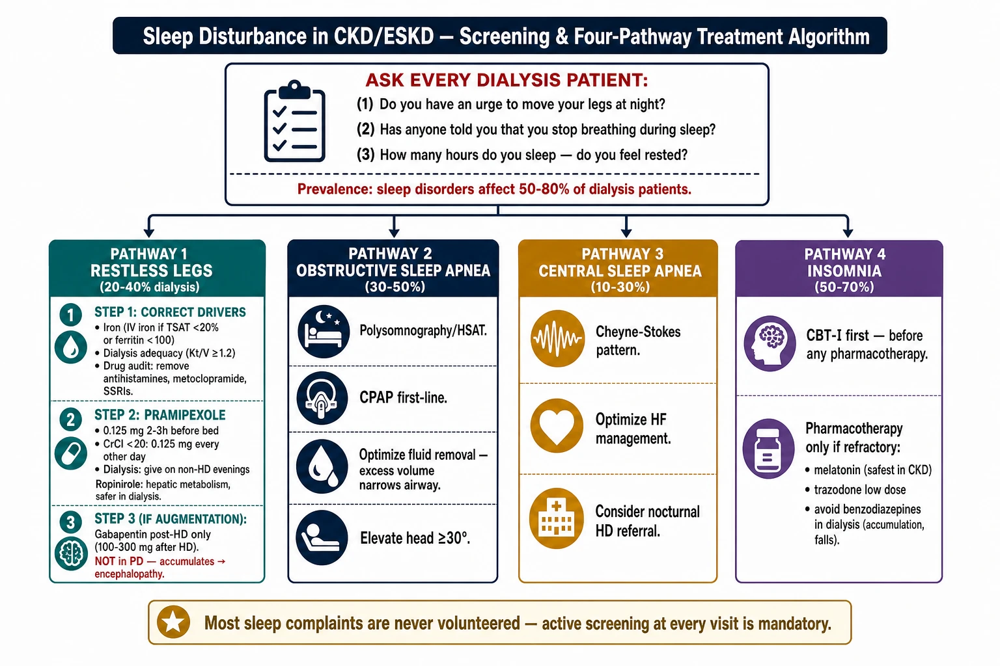
Sleep Disorders in CKD/ESKD — 3-question screen, four-pathway algorithm: RLS (iron→pramipexole→gabapentin post-HD), OSA (CPAP), CSA, and insomnia (CBT-I first).
⚠
Ask first — most patients never volunteer sleep complaints
Screen every dialysis patient at each clinic visit with three questions: "Do you have an urge to move your legs at night?" · "Has anyone told you that you stop breathing during sleep?" · "How many hours do you sleep — do you feel rested when you wake?" A positive screen on any directs the workup below.
Sleep Disorder Types in CKD/ESKD — Overview
Disorder
Prevalence in dialysis
Key feature
First step
Restless Legs Syndrome (RLS)
20–40%
Irresistible urge to move legs at night; worse at rest; relieved by movement
Check iron, optimize dialysis adequacy
Obstructive Sleep Apnea (OSA)
30–50%
Snoring, witnessed apneas, morning headache, EDS
Polysomnography; CPAP
Central Sleep Apnea (CSA)
10–30%
Cheyne-Stokes pattern; common in HFrEF + ESKD
Optimize HF management; consider nocturnal HD
Insomnia
50–70%
Difficulty initiating or maintaining sleep; early waking
Sleep hygiene + CBT-I before pharmacotherapy
Excessive Daytime Sleepiness
40–60%
Epworth scale ≥10; often secondary to above disorders
Treat underlying primary disorder
Restless Legs Syndrome — CKD-Specific Management
Step 1
Correct the underlying drivers — this alone may resolve RLS
Iron: iron deficiency is a primary driver of RLS in CKD. Check TSAT and ferritin. If TSAT <20% or ferritin <100 ng/mL → IV iron repletion before any drug. Significant RLS improvement occurs within 4–6 weeks of IV iron in iron-deficient patients. Dialysis adequacy: Kt/V <1.2 worsens uremic RLS. Optimize dialysis dose. Nocturnal HD (6 nights/week) dramatically reduces RLS burden — consider referral if standard HD is failing. Drug audit: remove aggravating drugs — antihistamines (diphenhydramine, hydroxyzine), metoclopramide, antipsychotics, antidepressants (especially SSRIs, TCAs), caffeine.
Step 2
Dopamine agonists — first-line pharmacotherapy for moderate–severe RLS
Pramipexole (Sifrol) — start 0.125 mg 2–3 h before bedtime. Titrate by 0.125 mg every 5–7 days to effect; usual effective dose 0.25–0.5 mg. CKD dose adjustment: pramipexole is 90% renally excreted. In CrCl <20: 0.125 mg OD (do not exceed). In dialysis: 0.125 mg every other day or 3×/week — give on non-dialysis evenings if possible.
Ropinirole (Requip) — start 0.25 mg at bedtime; titrate to 0.5–2 mg over 2–4 weeks. Primarily hepatic metabolism — safer than pramipexole in dialysis; no strict renal dose adjustment required.
Augmentation: long-term dopamine agonist use can cause paradoxical worsening (RLS earlier in day, spreading to arms). If augmentation develops, switch to an alpha-2-delta ligand (Step 3). PH brands: Sifrol (pramipexole, Boehringer) · ~₱30–60/tab.
Step 3
Alpha-2-delta ligands — preferred in dialysis if dopamine agonists fail or augment
Gabapentin — highly effective for RLS in dialysis. Dose after each HD session only (100–300 mg post-HD; titrate over 2–4 weeks to symptom control). Completely dialysed — give post-session, not pre. Do NOT use in PD (not cleared — accumulates severely → encephalopathy).
Pregabalin — same principle as gabapentin. Post-HD dosing: 25–75 mg after each session. Also avoid in PD for same reason. Both have sedative, dizziness, and fall risk — start low.
Recognising and managing dopamine agonist augmentation
Augmentation = RLS symptoms begin earlier in the day, spread to arms, become more intense despite adequate drug dose. Occurs in 8–15% of patients after ≥6 months on dopamine agonists. Manage by: gradually tapering dopamine agonist (do not stop abruptly — rebound) while cross-titrating to gabapentin/pregabalin post-HD. If refractory, low-dose opioids (tramadol, codeine — use with caution in CKD) have evidence.
Sleep Apnea in ESKD
Obstructive Sleep Apnea (OSA)
Diagnosis: polysomnography or home sleep apnea test (HSAT). Refer to pulmonology/sleep medicine for suspected moderate–severe OSA (AHI ≥15 or symptomatic AHI ≥5).
Treatment: CPAP is the primary therapy — reduces AHI, improves daytime sleepiness, may reduce cardiovascular events. Auto-titrating CPAP (APAP) is acceptable for uncomplicated OSA.
Volume overload contributes: excess fluid redistributes to the neck during recumbency → upper airway narrowing. Aggressive fluid removal (optimized UF targets) can reduce OSA severity in HD patients. Elevate head of bed ≥30°.
Central Sleep Apnea / Cheyne-Stokes Respiration
Context: CSA with Cheyne-Stokes breathing is most common in the setting of HFrEF + ESKD — the combination of impaired cardiac output and uremia creates loop gain instability in respiratory control.
Treat the HF: optimizing cardiac function with guideline-directed therapy (ACEi/ARB, beta-blockers, SGLT2i, MRA) reduces CSA severity.
Nocturnal HD: multiple studies show nocturnal HD (5–6 nights/week, 6–8 h/session) significantly reduces both OSA and CSA burden — likely via improved fluid balance and uremic solute clearance. Consider nephrology referral for nocturnal HD in patients with refractory sleep apnea.
ASV caution: adaptive servo-ventilation is contraindicated in HFrEF with EF ≤45% (SERVE-HF trial: increased mortality).
Insomnia — Non-Pharmacologic First, Then Pharmacotherapy
Non-pharm
CBT-I and sleep hygiene — more effective than any drug long-term
Cognitive Behavioural Therapy for Insomnia (CBT-I) is the guideline-recommended first-line treatment for chronic insomnia regardless of CKD stage. Components: sleep restriction, stimulus control, cognitive restructuring, relaxation. Referral to psychology/sleep clinic preferred; CBT-I apps (Sleepio, Insomnia Coach) are evidence-based alternatives.
Sleep hygiene for dialysis patients specifically:
Schedule dialysis to avoid sessions ending late evening — post-HD arousal state impairs sleep onset
Fixed wake time 7 days/week — anchors circadian rhythm
Avoid napping >20 min after 2 pm
Bright light exposure in the morning; dim lights 2 h before bed
Address nocturia — if post-HD fluid shifts cause nocturia, adjust target weight and UF strategy
Pharmacotherapy
When pharmacotherapy is needed — use the safest agents in CKD
Agent
Dose
CKD safety
Notes
Melatonin
3–5 mg at bedtime
Safe at any eGFR; no dose adjustment
OTC; minimal side effects; best for circadian misalignment; start here. PH: available OTC ~₱20–40/tab.
Mirtazapine
7.5–15 mg at bedtime
Use with caution in G4–5; reduce dose; sedation is the target effect
Useful when insomnia co-exists with depression or anorexia (stimulates appetite). Avoid if drowsy during dialysis sessions. PH: generic, Remeron (Organon) ~₱30–50/tab.
Low-dose doxepin
3–6 mg at bedtime
Caution in CKD — metabolite accumulation; reduce dose; avoid G5
Approved specifically for sleep maintenance insomnia. Anticholinergic effects; falls risk. Use only if melatonin + mirtazapine fail.
Clonazepam
0.25–0.5 mg at bedtime
Accumulates in CKD; start at 0.25 mg; short-term use only (≤4 weeks)
Useful for RLS + insomnia combination. Risk: respiratory depression, dependence, falls in elderly. Avoid in OSA. PH: generic, Rivotril (Roche) ~₱15–30/tab.
Zolpidem / Zopiclone
—
Avoid in CKD G4–5 and elderly dialysis patients
Accumulation → prolonged sedation, falls, delirium. If used, halve dose and limit to 2–3 doses/week.
Commonly in OTC sleep aids (e.g., Benadryl). Explicitly contraindicates in any patient with RLS or CKD G4–5.
Dialysis-Specific Interventions That Improve Sleep Across All Disorder Types
Optimize dialysis adequacy
Kt/V <1.2 worsens uremic RLS, insomnia, and EDS. A single rise in Kt/V from 1.0 to 1.4 produces measurable sleep improvement. Check Kt/V every 1–3 months. Uremic pruritus (a major sleep disruptor) also improves with better adequacy.
Correct anemia and iron
Target Hgb 10–11.5 g/dL. Iron deficiency independently worsens RLS regardless of anemia status. IV iron repletion (TSAT >20%, ferritin >200 in dialysis) should precede any RLS pharmacotherapy. Fatigue from anemia overlaps heavily with insomnia and EDS — treating one often improves the other.
Nocturnal HD for refractory cases
Patients on nocturnal HD (5–6×/week, 6–8 h overnight) consistently report dramatic sleep quality improvement — likely due to continuous uremic solute clearance, better fluid control, and less post-HD sympathetic arousal. If a patient's sleep disorders are driving poor quality of life despite all other interventions, nocturnal HD referral is warranted.
Quick Reference — Sleep Disturbance in CKD/ESKD
Screen every dialysis patient: RLS · apnea · insomnia
RLS Step 1: IV iron (if TSAT <20%) + optimize Kt/V
RLS Step 2: pramipexole 0.125 mg at bedtime (0.125 mg every other day in dialysis)
RLS Step 3: gabapentin 100–300 mg post-HD only (never in PD)
Avoid: diphenhydramine (worsens RLS), zolpidem in G4–5 (accumulates), benzodiazepines long-term
Gabapentin/pregabalin: post-HD dosing only; never give pre-HD or in PD
Augmentation on dopamine agonists: cross-titrate to gabapentin post-HD
HbA1c is unreliable when managing glycemia + sleep in dialysis — use fructosamine
Nocturnal HD improves RLS, OSA, CSA, and insomnia — most effective non-drug intervention
12
Antibiotic Stewardship in CKD and ESKD
CKD patients are caught between two forces: they are more susceptible to infection (uremic immune dysfunction, dialysis access, frequent healthcare contact) and more vulnerable to antibiotic toxicity (drug accumulation, nephrotoxin-on-injured-kidney, hyperkalemia from TMP-SMX). Stewardship in this population means choosing the right drug, the right dose, and the right duration — and knowing which common prescribing habits are quietly dangerous.
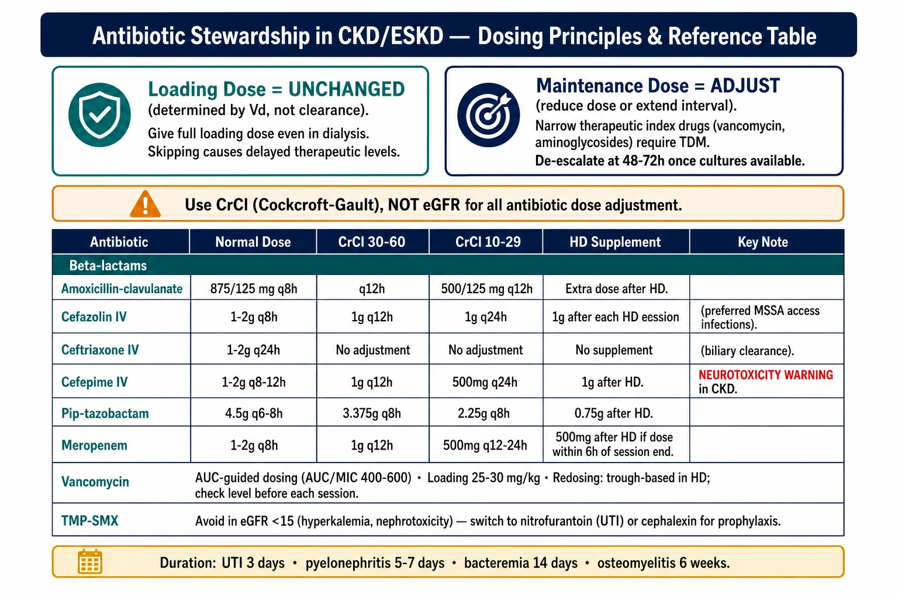
Antibiotic Stewardship in CKD/ESKD — loading dose unchanged principle, CrCl-based maintenance adjustment table (beta-lactams, vancomycin, TMP-SMX), and HD supplement rules.
⚠
Use Cockcroft-Gault CrCl — not eGFR — for antibiotic dose adjustment
All antibiotic dosing references use CrCl by Cockcroft-Gault. In elderly, low-muscle-mass, or malnourished patients the eGFR (CKD-EPI) overestimates renal drug clearance. A 70-year-old, 50 kg woman with creatinine 1.2 mg/dL may have CrCl ~28 mL/min despite an eGFR suggesting G3a. Always calculate CrCl before selecting dose.
Core Stewardship Principles in CKD
Loading dose vs. maintenance dose
Loading dose: generally unchanged — determined by volume of distribution (Vd), not clearance. Skipping or reducing the loading dose leads to delayed therapeutic levels. Give full loading dose even in dialysis.
Maintenance dose: this is where renal adjustment applies — either reduce the dose, extend the interval, or both. The choice depends on the drug's toxicity profile: narrow therapeutic index drugs (vancomycin, aminoglycosides) require TDM; broad-index drugs (amoxicillin) tolerate interval extension alone.
Culture first; de-escalate early
Dialysis patients carry resistant organisms (MRSA, ESBL-producing Enterobacteriaceae, VRE) at higher prevalence due to repeated healthcare exposure. Empiric coverage must reflect this. But empiric broad-spectrum therapy should be de-escalated within 48–72 h once culture results are available — continuing meropenem for a susceptible E. coli just because the patient "looks sick" is stewardship failure.
Duration: use the shortest evidence-based course. 3 days for uncomplicated lower UTI (women); 5–7 days for pyelonephritis; 14 days for bacteraemia (not 21 unless source control problem); 6 weeks for osteomyelitis.
Antibiotic Dose Adjustment Reference — CKD and Dialysis
Antibiotic
Normal dose
CrCl 30–60
CrCl 10–29
HD supplement
PH brands
Beta-lactams
Amoxicillin-clavulanate
875/125 mg q8h
875/125 mg q12h
500/125 mg q12h
One extra dose after HD
Augmentin (GSK), generic
Cefazolin IV
1–2 g q8h
1 g q12h
1 g q24h
1 g after each HD session — preferred agent for HD access infections (MSSA)
Generic, widely available
Ceftriaxone IV/IM
1–2 g q24h
No adjustment
No adjustment
No supplement needed (biliary clearance)
Rocephin (Roche), generic
Cefepime IVNeurotox risk
1–2 g q8–12h
1 g q12h
500 mg q24h
1 g after each HD session
Maxipime, generic
Pip-tazo IV
4.5 g q6–8h
3.375 g q8h
2.25 g q8h
0.75 g after each HD session
Tazocin (Pfizer), generic
Meropenem IV
1–2 g q8h
1 g q12h
500 mg q12h; 500 mg q24h if CrCl <10
500 mg after HD if dose given within 6 h of session end
Meronem (AstraZeneca), generic
Ertapenem IV
1 g q24h
No adjustment
500 mg q24h (CrCl <30)
150 mg supplement if HD within 6 h of dose
Invanz (MSD)
Fluoroquinolones
Ciprofloxacin oral
500 mg q12h
250–500 mg q12h
250 mg q12h
Give after HD; some cleared by dialysis
Ciprobay (Bayer), generic
Levofloxacin oral/IV
500 mg q24h
250 mg q24h
250 mg q48h (or 500 mg loading → 250 mg q48h)
No supplement (not significantly dialysed)
Cravit (Sanofi), generic
Moxifloxacin oral
400 mg q24h
No adjustment
No adjustment
No supplement (biliary — useful when renal adjustment impractical)
Avelox (Bayer)
Glycopeptides
Vancomycin IVTDM required
15–20 mg/kg q8–12h
15–20 mg/kg q12–24h; use TDM
15–20 mg/kg loading; redose by trough or AUC
Redose 500 mg–1 g when trough <15 (typically q3–7 days); high-flux membranes remove more
Generic, Vancocin
Teicoplanin IV/IM
6 mg/kg q12h ×3 then q24h
q48h after day 4
q72h after day 4
Not significantly dialysed; no supplement
Targocid (Sanofi)
Other key agents
TMP-SMX oralK⁺ risk
1 DS tab q12h
1 DS tab q12h; check K⁺
Use with caution; 1 DS q24h; check K⁺ closely; avoid for prophylaxis in G4–5
Give after HD; dialysed partially
Bactrim (Roche), generic
Metronidazole oral/IV
500 mg q8h
No adjustment (<7 days)
500 mg q12h for prolonged courses; metabolite accumulates
No supplement needed (not removed by HD)
Flagyl (Sanofi), generic
Azithromycin oral
500 mg OD × 3–5 days
No adjustment
No adjustment (biliary)
No supplement
Zithromax (Pfizer), generic
Clarithromycin oralCYP3A4 inhibitor
500 mg q12h
250 mg q12h
250 mg q12h (max 500 mg/day if CrCl <30)
No supplement
Klacid (Abbott), generic
Fluconazole oral/IV
100–400 mg q24h
50% dose reduction if CrCl <50
50% dose reduction; full loading dose
Full dose after each HD session (significantly dialysed)
Diflucan (Pfizer), generic
NitrofurantoinAvoid CKD
100 mg q12h
AVOID if CrCl <30 — inadequate urine drug concentration + peripheral neuropathy risk. Use cephalosporins or quinolones instead for UTI in CKD.
—
Aminoglycosides not listed — avoid in non-dialysis CKD. In dialysis: 1.5 mg/kg gentamicin post-HD with peak/trough TDM only; seek ID or nephrology guidance.
High-Risk Pitfalls — What Catches Clinicians Out
Cefepime
Cefepime encephalopathy — common and underrecognised in CKD
Cefepime crosses the blood-brain barrier at elevated plasma levels. In CKD — even moderate — standard doses produce neurotoxicity: confusion, myoclonus, non-convulsive status epilepticus (NCSE), and coma. The EEG pattern (triphasic waves) can be mistaken for uraemic encephalopathy or septic encephalopathy.
If a CKD patient on cefepime becomes confused or develops myoclonus: assume cefepime toxicity first. Hold drug, check EEG, obtain nephrology review. Recovery is usually complete after dose reduction or cessation. Dose-reduce aggressively (see table) — 500 mg q24h in dialysis is often sufficient for susceptible organisms.
Nitrofurantoin
Ineffective AND toxic in CKD G3b+ — still over-prescribed for UTI
Nitrofurantoin requires adequate GFR to achieve therapeutic concentrations in urine. Below CrCl 30: urine levels are sub-therapeutic (treatment failure) AND systemic drug accumulates (peripheral neuropathy, pulmonary toxicity with prolonged use). Despite this, it remains a common prescription in CKD patients presenting with UTI symptoms.
Substitute: cephalexin 500 mg q12h × 3–5 days; or cefuroxime 250 mg q12h; or levofloxacin 250 mg q24h × 3 days (check local resistance pattern first).
TMP-SMX
Trimethoprim raises K⁺ and creatinine — often misinterpreted
Trimethoprim blocks tubular K⁺ secretion (same mechanism as amiloride) → hyperkalemia. Effect is dose-dependent and more pronounced in CKD G3–5.
Trimethoprim also blocks tubular creatinine secretion → serum creatinine rises 0.1–0.3 mg/dL without any change in true GFR. This frequently triggers unnecessary nephrology referrals or RAASi dose reduction.
Rules: avoid TMP-SMX for prophylaxis in CKD G4–5 (K⁺ risk); if treating a UTI in G3, check K⁺ at day 3–5; if K⁺ rises >0.5 mEq/L above baseline, switch antibiotic.
Clarithromycin
CYP3A4 inhibitor — raises levels of tacrolimus, finerenone, statins
Clarithromycin is a potent CYP3A4 inhibitor. A single 5-day course can double tacrolimus trough levels in transplant patients → toxicity. In patients on finerenone (Firialta), clarithromycin increases exposure ~2-fold — either avoid (use azithromycin instead) or halve the finerenone dose during the course.
Avoid in non-dialysis CKD — residual function is irreplaceable
Even a single dose of gentamicin in a CKD G3–4 patient can precipitate an AKI-on-CKD event that permanently shifts the patient to a lower GFR stage. There is almost always a safer alternative.
If aminoglycoside is truly necessary (e.g., gentamicin for synergy in endocarditis, ID-directed): single daily dosing (extended interval), peak (30 min post-dose) and trough (pre-next-dose) monitoring, and limit to the shortest possible course. In dialysis patients, give post-HD only with full TDM.
Avoid triple nephrotoxin combination: aminoglycoside + vancomycin + loop diuretic — this combination produces AKI in >30% of patients even with normal baseline GFR.
Vancomycin
TDM is mandatory — AUC-guided dosing preferred over trough-only
Trough-only monitoring underestimates exposure variability in CKD. AUC/MIC-guided dosing (target AUC 400–600 mg·h/L) reduces nephrotoxicity vs. high-trough strategy while maintaining efficacy (ASHP/IDSA 2020 guideline).
In HD patients: give full loading dose (25–30 mg/kg for serious infections); supplement 500 mg–1 g when pre-HD trough <15 mg/L (typically every 3–7 days depending on dialysis membrane). High-flux and high-efficiency membranes remove significantly more vancomycin.
Access Infections in HD — Empiric Antibiotic Selection
AV fistula / graft exit-site infection or bacteraemia
Empiric (pending blood cultures):
MSSA likely: Cefazolin 1 g IV after each HD session
MRSA suspected (prior MRSA, nasal carrier, healthcare exposure): Vancomycin per TDM dosing above.
De-escalate to cefazolin once culture confirms MSSA — do not continue vancomycin for susceptible Staph aureus (inferior outcomes + nephrotoxicity).
Duration: 6 weeks for confirmed bacteraemia (rule out endocarditis with echo if Staph aureus); 2 weeks for exit-site-only without bacteraemia.
Tunnelled catheter (TCC) infection
Exit site only (no fever, no bacteraemia): topical mupirocin + systemic antibiotic for 2 weeks; can attempt catheter salvage.
Tunnel infection or bacteraemia: remove catheter — do not attempt to salvage. Empiric vancomycin; replace catheter only after 2–3 negative blood cultures and apyrexial ≥48 h.
Staph aureus bacteraemia with TCC: mandatory catheter removal + minimum 4 weeks IV antibiotics + rule out endocarditis (TEE preferred). Oral step-down is not appropriate for Staph aureus bacteraemia in this population.
Send effluent for cell count, Gram stain, and culture before starting antibiotics. Culture-negative peritonitis occurs in 20% of cases — treat empirically for the full course regardless.
Empiric IP
Intraperitoneal antibiotics — preferred route over IV for PD peritonitis
Gram-positive cover:Cefazolin 15 mg/kg IP in one daily long-dwell exchange (ISPD preferred; covers MSSA, Strep).
Add vancomycin 15–30 mg/kg IP if prior MRSA, recent hospitalisation, or severe presentation.
Gram-negative cover:Ceftazidime 15 mg/kg IP in one daily long-dwell exchange. Alternative: gentamicin 0.6 mg/kg IP (single daily long-dwell) if ceftazidime unavailable — monitor residual renal function.
Duration: 14 days for most organisms (21 days for Staph aureus, Enterococcus, Pseudomonas, fungal — latter requires catheter removal + antifungal).
Catheter removal
Remove PD catheter without hesitation for these indications
Fungal peritonitis (remove immediately) · Refractory peritonitis (no clinical improvement at 72 h) · Relapsing peritonitis (same organism within 4 weeks of treatment completion) · Mycobacterial peritonitis · Fecal peritonitis (perforated viscus) · Tunnel/exit site infection concurrent with peritonitis.
Quick Reference — Antibiotic Stewardship in CKD
Use CrCl (Cockcroft-Gault) — not eGFR — for dose adjustment
Loading dose: full standard dose regardless of CKD stage
Cefepime: dose-reduce aggressively; confusion + myoclonus = stop drug immediately
Nitrofurantoin: avoid if CrCl <30 — ineffective AND toxic; use cephalexin/levofloxacin
TMP-SMX: raises K⁺ and creatinine; check K⁺ at day 3–5; avoid prophylaxis in G4–5
Clarithromycin: CYP3A4 inhibitor — doubles tacrolimus/finerenone levels; use azithromycin instead
Ceftriaxone + moxifloxacin + azithromycin: no renal dose adjustment
Aminoglycosides: avoid in non-dialysis CKD; post-HD only in dialysis with TDM
Never combine aminoglycoside + vancomycin + loop diuretic (triple nephrotoxin)
HD access bacteraemia: cefazolin 1 g post-HD for MSSA; vancomycin TDM for MRSA
Vancomycin HD: supplement post-session; AUC-guided preferred over trough-only
PD peritonitis: IP cefazolin + IP ceftazidime empirically; remove catheter for fungal/refractory
13
Anti-Tuberculosis Medications in CKD and ESKD
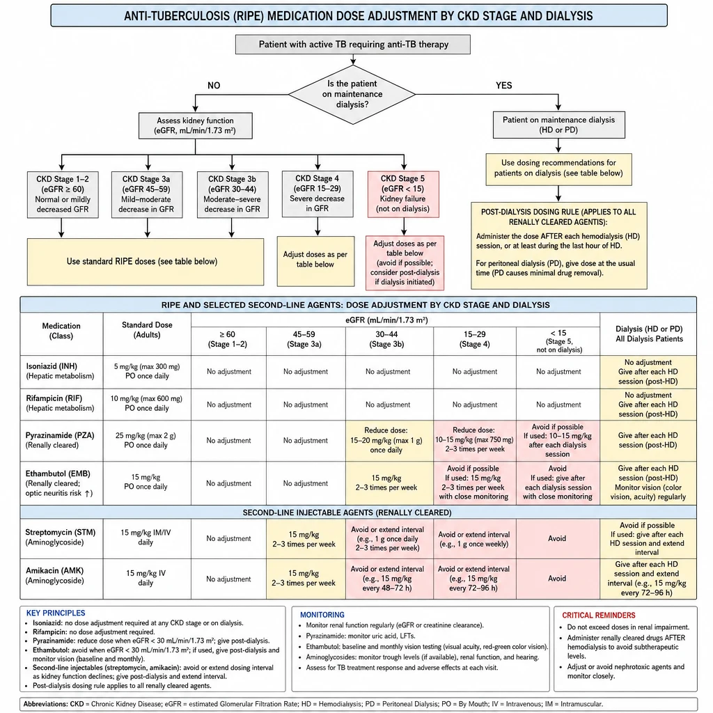
Anti-TB RIPE Matrix in CKD/ESKD — ethambutol optic neuritis warning, pyrazinamide hyperuricemia, post-HD dosing rules, and pyridoxine mandatory co-prescription.
Use CrCl (Cockcroft-Gault), not eGFR, for all TB drug dose adjustments.
Isoniazid, rifampicin, and pyrazinamide are primarily hepatically metabolized — dose adjustment focuses on ethambutol and the second-line injectables. All TB patients on dialysis require post-HD dosing of renally cleared agents.
First-Line RIPE Agents — Dose Adjustment by CKD Stage
Drug
Normal dose
CrCl 30–59
CrCl 10–29 / G5
HD (thrice-weekly)
PD
Key toxicity
Isoniazid (H) Hepatic acetylation
5 mg/kg/day (max 300 mg)
No change
No change
No change; give after HD session (dialyzable)
No change
Hepatotoxicity; peripheral neuropathy — give pyridoxine 25–50 mg/day in all CKD patients
Rifampicin (R) Biliary elimination
10 mg/kg/day (max 600 mg)
No change
No change
No change; not significantly dialyzed
No change
Hepatotoxicity; potent CYP inducer — reduces levels of tacrolimus, ciclosporin, DOACs, azole antifungals; orange discoloration of body fluids
25–35 mg/kg 3×/week — give after HD (metabolite dialyzable)
12–20 mg/kg/day
Hyperuricemia (accentuated in CKD); hepatotoxicity; arthralgia. Monitor uric acid; add allopurinol if symptomatic gout (dose-adjust to CrCl)
Ethambutol (E) ~80% renal excretion
15–25 mg/kg/day
15 mg/kg/day every 24–36 h
15 mg/kg every 48 h
15–25 mg/kg 3×/week — give after HD (60% dialyzable)
15 mg/kg every 24–48 h
Optic neuritis (dose-dependent, accentuated by accumulation in renal failure) — monthly visual acuity + red-green color testing mandatory
Ethambutol red line: Monthly ophthalmology screening (visual acuity + color vision) is non-negotiable in CKD G4–5 and dialysis patients. Any visual symptom → stop immediately and do not rechallenge.
Pyridoxine (vitamin B6) 25–50 mg/day must accompany isoniazid in all CKD and ESKD patients — uremia independently depletes B6, and deficiency accelerates isoniazid-induced peripheral neuropathy.
Largely replaced by newer agents in MDR-TB regimens
High-Risk Pitfalls in TB + CKD
Rifampicin + CNI
Transplant TB: rifampicin drops tacrolimus levels 10–15-fold within days
Rifampicin is a potent CYP3A4/P-gp inducer. If TB treatment is mandatory post-transplant, switch to rifabutin (weaker inducer) after MDT discussion and increase tacrolimus dose with daily TDM until stable.
PZA + Uric Acid
Pyrazinamide blocks urate excretion — CKD amplifies the effect
Add allopurinol 100 mg/day (50 mg/day if CrCl <30) if symptomatic gout develops. Asymptomatic hyperuricemia alone does not require PZA discontinuation.
Ethambutol
Optic neuritis from accumulation — half-life >24 h in ESKD
Symptoms (blurred vision, color blindness) may be irreversible if caught late. Monthly visual acuity + red-green color testing is mandatory. If ophthalmology access is limited, consider substituting a fluoroquinolone after specialist consultation.
Aminoglycosides
Cumulative ototoxicity — irreversible even in anuric HD patients
Reserve for MDR-TB only when no alternative exists. If used: 2–3×/week post-HD dosing, strict TDM (Cmax 20–35, Cmin <5 μg/mL), baseline + monthly audiometry.
ECG at baseline, 2 weeks, 4 weeks, then monthly. Correct hypokalemia and hypomagnesemia before and throughout treatment — both are common in dialysis patients.
Post-HD Timing
Dialyzable TB drugs must be given immediately after — not before — HD
Agents cleared by HD: isoniazid, ethambutol, pyrazinamide, levofloxacin, cycloserine, amikacin. Pre-HD dosing results in sub-therapeutic levels as the drug is removed during the session.
Monitoring Schedule During TB Treatment in CKD
Parameter
Frequency
Rationale
LFTs (AST, ALT, bilirubin)
Baseline, then monthly
All first-line agents are hepatotoxic; uremia blunts early symptoms
Visual acuity + red-green color vision
Baseline, then monthly (if on EMB)
Ethambutol optic neuritis — irreversible if delayed
Serum uric acid
Baseline, monthly (if on PZA)
Pyrazinamide + CKD = compounding hyperuricemia
CBC
Baseline, monthly (if on linezolid)
Thrombocytopenia and anemia — accentuated in uremia
ECG (QTc)
Baseline, 2 wk, 4 wk, then monthly (if on BDQ/CFZ/FQ)
QTc prolongation risk, especially with stacked regimens
Audiometry
Baseline + monthly (if on aminoglycosides)
Irreversible ototoxicity from accumulation
Tacrolimus / ciclosporin trough
Daily × 1–2 weeks when rifampicin started or stopped
CYP3A4 induction/deinduction causes large unpredictable level swings
Neuropathy assessment
Monthly (if on INH, cycloserine, linezolid)
Peripheral neuropathy — give pyridoxine 25–50 mg/day throughout
Quick Reference — Anti-TB in CKD/ESKD
Isoniazid & rifampicin: no dose adjustment in any CKD stage
Pyrazinamide: 3×/week dosing in CrCl <30 and HD; give post-HD
Ethambutol: every 48 h in CrCl <30; 3×/week post-HD
All dialyzable agents: dose immediately after HD session
Pyridoxine 25–50 mg/day: mandatory with INH in every CKD patient
Rifampicin + tacrolimus: expect 10–15× level drop — daily TDM when starting/stopping
Ethambutol: monthly visual acuity + color vision — stop at first symptom
PZA: monitor uric acid; add allopurinol if symptomatic gout develops
Aminoglycosides: reserve for MDR-TB only; TDM + audiometry mandatory
Levofloxacin preferred over moxifloxacin for FQ-based regimens in CKD
Cycloserine accumulates in ESKD: reduce to 250 mg/day; watch for seizures/psychosis
14
HIV Antiretroviral Medications in CKD and ESKD
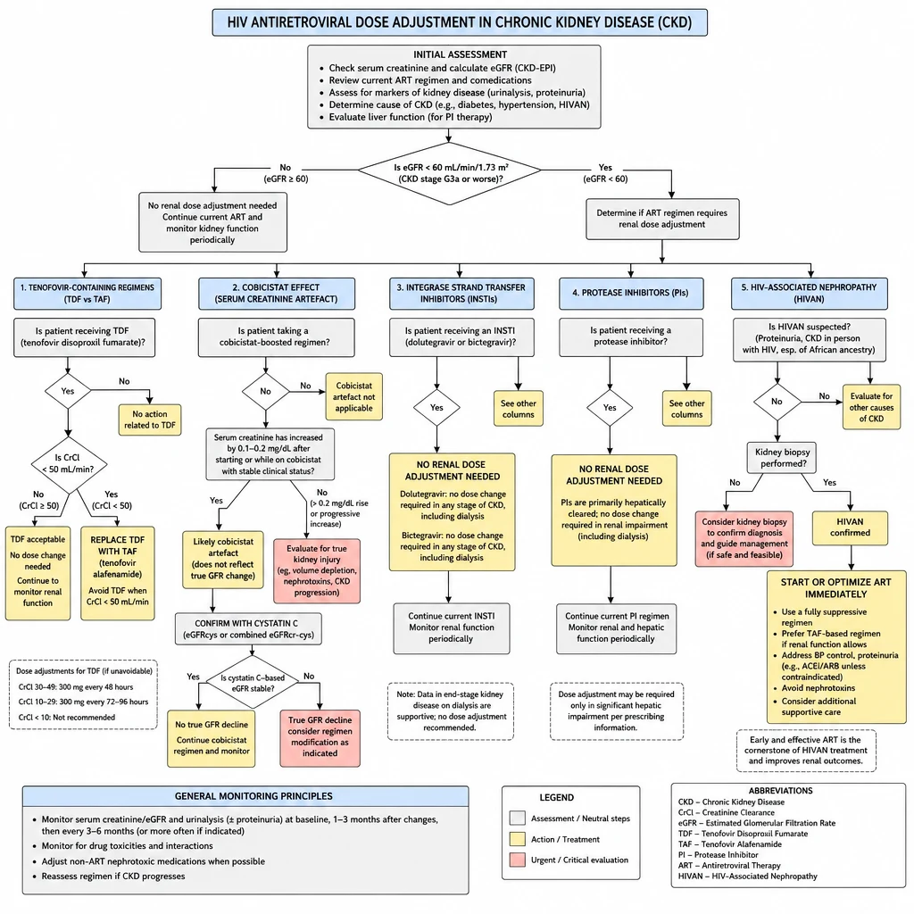
HIV ARV in CKD — TDF vs TAF comparison, cobicistat creatinine artifact warning (confirm with cystatin C), NRTI dose adjustment by CrCl, and integrase inhibitor preference.
HIV-associated nephropathy (HIVAN) and TDF nephrotoxicity are the two most common renal presentations in PLHIV.
Tenofovir disoproxil fumarate (TDF) must be dose-adjusted or replaced in CrCl <50. Use CrCl (Cockcroft-Gault) for ARV dosing decisions. Most integrase inhibitors and protease inhibitors are hepatically cleared and need no renal adjustment — but their pharmacokinetic boosters (cobicistat, ritonavir) can spuriously raise serum creatinine by inhibiting tubular creatinine secretion without affecting true GFR.
Cobicistat creatinine artifact: Cobicistat (in Genvoya, Symtuza, Stribild) inhibits MATE1/OCT2 tubular creatinine secretion — serum creatinine rises 0.1–0.2 mg/dL and eGFR appears to fall ~10 mL/min without true GFR change. Confirm with cystatin C or 24-h urine creatinine before switching ARVs for apparent CKD progression.
NRTI Backbone — Dose Adjustment by Renal Function
Drug
CrCl ≥50
CrCl 30–49
CrCl 10–29
HD
PD
Key renal concern
Tenofovir DF (TDF) Viread; in Truvada, Atripla
300 mg q24h
300 mg q48h
300 mg q72–96h (limited data — avoid if possible)
300 mg after each HD session (~weekly) (dialyzable)
Avoid — inadequate clearance data; high nephrotoxicity risk
Tenofovir alafenamide (TAF) In Descovy, Genvoya, Symtuza, Biktarvy
25 mg q24h (or 10 mg with booster)
No change
No change
No change; not significantly dialyzed
No change
Preferred TDF alternative in CrCl <50. ~90% lower plasma tenofovir levels than TDF — less tubular toxicity. Limited data in CrCl <15.
Emtricitabine (FTC) In Truvada, Descovy, Biktarvy
200 mg q24h
200 mg q48h
200 mg q72h
200 mg after each HD (3×/week) (dialyzable ~30%)
200 mg q96h
Renally excreted — dose-extend in CKD. Rarely causes toxicity at adjusted doses.
Lamivudine (3TC) Epivir; in Kivexa, Triumeq
300 mg q24h or 150 mg q12h
150 mg q24h
100 mg loading → 50 mg q24h
50 mg after HD (3×/week) (dialyzable)
25–50 mg q24h
Renally excreted; well-tolerated at adjusted doses. Preferred NRTI partner in low-resource HD settings.
Abacavir (ABC) In Kivexa, Triumeq
600 mg q24h or 300 mg q12h
No change
No change
No change; not dialyzed (hepatic glucuronidation)
No change
Hepatically metabolized — no renal dose adjustment. HLA-B*57:01 screen mandatory before use (hypersensitivity). Cardiovascular risk with prolonged use.
Zidovudine (AZT) Retrovir; second-line only
300 mg q12h
No change
100 mg q8h (metabolite accumulation)
100 mg q6–8h; supplement after HD
100 mg q8h
Myelosuppression (anemia, neutropenia) — accentuated by CKD-related anemia and EPO deficiency. Use only when no alternative available.
INSTIs, NNRTIs, and Boosted PIs — Renal Adjustment Summary
Class / Drug
Renal adjustment needed?
HD
Notes
Dolutegravir (DTG) In Triumeq, Dovato
No — hepatic UGT1A1/CYP3A
No change; not dialyzed
Preferred INSTI backbone in CKD/ESKD. Raises serum creatinine ~0.1 mg/dL via OCT2 inhibition (artifact, not true GFR fall). Safe in all stages.
Bictegravir (BIC) In Biktarvy
No — hepatic CYP3A/UGT1A1
No change; not dialyzed
Limited data in CrCl <30 and HD. Generally considered safe; part of preferred Biktarvy (BIC/TAF/FTC) regimen in stable CKD ≥15.
Raltegravir (RAL) Isentress
No — hepatic glucuronidation
No change; not dialyzed
Well-characterized in HD — older INSTI, used when newer options unavailable. No creatinine artifact.
Elvitegravir/cobicistat In Stribild, Genvoya
Avoid if CrCl <70 (Stribild) or <30 (Genvoya/TAF)
Not recommended — cobicistat unpredictable in HD
Cobicistat raises creatinine ~0.1–0.2 mg/dL (artifact). Stribild contains TDF — avoid in CrCl <70. Genvoya (TAF-based) avoid in CrCl <30.
Efavirenz (EFV) In Atripla; second-line
No — hepatic CYP2B6
No change; not dialyzed
Neuropsychiatric side effects (vivid dreams, depression) — CKD patients with uremia may be more susceptible. Atripla contains TDF; substitute individually if CrCl <50.
Rilpivirine (RPV) In Odefsey, Complera
No — hepatic CYP3A4
No change; not dialyzed
Odefsey (RPV/TAF/FTC) is an option in CKD — check that FTC dose is adjusted. Requires acid environment for absorption — avoid PPIs.
Darunavir/ritonavir (DRV/r) Prezista + Norvir
No — hepatic CYP3A4
No change; not dialyzed
Ritonavir raises creatinine slightly via OCT2 inhibition (artifact). Monitor LFTs — both are hepatotoxic. Preferred PI in CKD when INSTI not available.
Darunavir/cobicistat (DRV/c) Rezolsta, Symtuza
Avoid in CrCl <70 (Symtuza has TDF); DRV/c alone: avoid <30
Not recommended
Same cobicistat creatinine artifact concern. Symtuza (DRV/c/TAF/FTC) is an option in CrCl ≥15 if TAF-based, but limited HD data.
Lopinavir/ritonavir (LPV/r) Kaletra; second-line
No — hepatic
No change; not dialyzed
GI intolerance, dyslipidemia, and hepatotoxicity — generally replaced by INSTIs. Retained as second-line option in resource-limited settings.
Preferred Regimens by CKD Stage
G1–G3a
CrCl ≥50 — standard regimens apply
Biktarvy (BIC/TAF/FTC), Dovato (DTG/3TC), or Triumeq (ABC/3TC/DTG — HLA-B*57:01 negative only). TDF-containing regimens permissible but monitor creatinine, phosphate, and urine β2-microglobulin q6–12 months for early tubular toxicity.
G3b–G4
CrCl 15–49 — switch TDF to TAF
Preferred: Biktarvy (BIC/TAF/FTC) or DTG + TAF/FTC (Descovy). Alternatively DTG/3TC (Dovato) or ABC/3TC/DTG (Triumeq, if HLA-B*57:01 negative). Avoid TDF and cobicistat-boosted regimens.
Preferred backbone: DTG + 3TC (dose-adjusted) or ABC/3TC (HLA-B*57:01 negative) + DTG. Biktarvy used in practice despite limited CrCl <15 data. Give 3TC, FTC, AZT post-HD on dialysis days. Avoid TDF; avoid cobicistat-boosted regimens. Consult HIV specialist + pharmacist.
Critical Drug Interactions in HIV + CKD
RIF + DTG/BIC
Rifampicin drops dolutegravir levels ~75% — double the dose; bictegravir is contraindicated
Double DTG to 50 mg twice daily when co-administered with rifampicin. BIC (Biktarvy) is contraindicated with rifampicin — no approved adjustment. Alternative: switch to raltegravir 400 mg twice daily, or replace rifampicin with rifabutin.
RIF + Boosted PI
Rifampicin reduces PI levels 75–90% — virologic failure and resistance risk
Rifampicin is contraindicated with all boosted PI regimens (DRV/r, LPV/r, ATV/r). Substitute rifabutin 150 mg every other day — monitor for rifabutin toxicity (uveitis, neutropenia, orange skin discoloration).
TMP-SMX also raises creatinine via MATE1 inhibition (artifact). In CKD patients on TDF, co-administration increases tubular toxicity risk. Confirm true GFR with cystatin C if creatinine rises after starting TMP-SMX.
NSAIDs + TDF
Synergistic nephrotoxicity — avoid this combination entirely in CKD
NSAIDs reduce prostaglandin-mediated GFR and amplify TDF tubular toxicity. Use paracetamol at adjusted doses for analgesia instead.
PPI + RPV/ATV
PPIs abolish rilpivirine and atazanavir absorption — therapeutic failure
Both drugs require acidic gastric pH. CKD patients are frequently on PPIs for GI protection — review and switch RPV- or ATV-based regimens if PPI cannot be stopped. H2-blockers are permissible with rilpivirine if separated by ≥12 h.
Tacrolimus dose may need to fall to 0.5 mg/week or less. Daily TDM for 1–2 weeks when a boosted ARV is started or stopped. Prefer unboosted INSTI (DTG, RAL, BIC) in all kidney transplant recipients whenever feasible.
HIV-Associated Nephropathy and TDF Nephrotoxicity
HIVAN
TDF Nephrotoxicity
Mechanism
Direct HIV infection of podocytes and tubular cells; collapsing FSGS pattern
Mitochondrial toxicity in proximal tubular cells → Fanconi syndrome
Presentation
Heavy proteinuria, rapid CKD progression, echogenic kidneys on US
Normoglycemic glucosuria, hypophosphatemia, low uric acid, tubular proteinuria (β2-microglobulin), AKI on CKD
Diagnosis
Kidney biopsy (collapsing FSGS); most common in African ancestry
PPIs + rilpivirine or atazanavir: avoid — absorption failure
HIVAN: start/optimize ART early; ACEi/ARB for proteinuria; biopsy if diagnosis uncertain
15
Stone Dissolution and Medical Expulsion Therapy
Stone type determines treatment — uric acid and cystine stones dissolve with alkalinization; calcium stones do not. Medical expulsion therapy (MET) with alpha-blockers accelerates passage of stones ≤10 mm and is first-line before urologic referral.
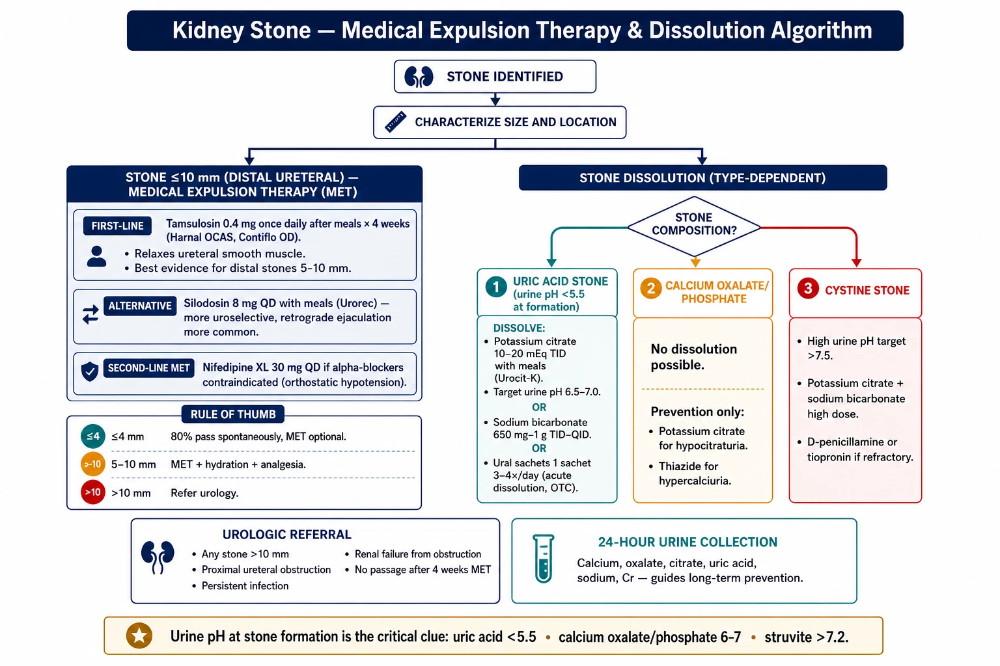
Stone Dissolution & MET — tamsulosin first-line for ≤10 mm, alkalinization by stone type (uric acid pH 6.5–7.0, cystine >7.5), and urologic referral criteria.
Stone type must be identified before starting dissolution therapy.
Send all spontaneously passed stones for compositional analysis. Urine pH at the time of stone formation is a critical clue: uric acid stones form at pH <5.5; calcium oxalate/phosphate stones at pH 6–7; struvite at pH >7.2. 24-hour urine collection (calcium, oxalate, citrate, uric acid, sodium, creatinine) guides long-term prevention.
Medical Expulsion Therapy (MET) — Stones ≤10 mm
Drug
Dose
Local brands
Evidence / Notes
Tamsulosin (alpha-1 blocker) First-line MET
0.4 mg once daily after meals × 4 weeks (or until passage)
Relaxes ureteral smooth muscle — increases passage rate and reduces time to passage. Best evidence for distal ureteral stones 5–10 mm. Continue ≤4 weeks; refer if no passage.
Silodosin (alpha-1A blocker)
8 mg once daily with meals × 4 weeks
Urorec (Recordati) ~₱80–100/cap
More uroselective than tamsulosin; similar efficacy for distal ureteral stones. Retrograde ejaculation more common. Alternative if tamsulosin not tolerated.
Relaxes ureteral smooth muscle via calcium-channel blockade. Inferior to tamsulosin in meta-analyses but still used when alpha-blockers are contraindicated (e.g., severe orthostatic hypotension). May help concurrent HTN.
MET rule of thumb: Stones ≤4 mm pass spontaneously in >80% — MET optional for symptom relief. Stones 5–10 mm: offer MET (tamsulosin preferred) + adequate hydration + pain control. Stones >10 mm or proximal ureteral stones with obstruction: urologic referral — MET alone is unlikely to achieve passage.
Urinary Alkalinization and Stone Dissolution Agents
Hyperkalemia risk — check K⁺ at baseline, 1 month, then q3–6 months. Avoid in CKD G4–5 unless K⁺ closely monitored. Take with meals — GI irritation if taken fasting.
Sodium bicarbonate
Systemic alkalinization → urine pH rise; cheap and widely available
650 mg–1 g TID–QID (titrate to urine pH); or ½–1 tsp baking soda in water TID
Generic NaHCO₃ tabs ~₱2–5/tab Baking soda (pharmacy-grade) ~₱50/box
6.5–7.0 (uric acid) >7.5 (cystine)
Uric acid stones; cystine stones (adjunct); metabolic acidosis in CKD
Sodium load — worsens fluid retention, HTN, and edema. Avoid in CHF, severe HTN, anasarca. Prefer potassium citrate in hypertensive or volume-sensitive patients. Alkalosis risk with overuse.
1 sachet (4 g) dissolved in water, 3–4× daily; continue 2–4 weeks for acute uric acid stone dissolution
Ural sachets (Alphapharm/Zuellig) ~₱18–25/sachet Available OTC in Mercury, Watsons
6.5–7.0
Uric acid stones (acute dissolution); symptomatic UTI alkalinization; dysuria relief
Contains sodium — same cautions as sodium bicarbonate for fluid-sensitive patients. Not a potassium source — does not correct hypocitraturia as effectively as potassium citrate long-term. Good for short-course acute dissolution.
Sambong (Blumea balsamifera) DOH-approved Philippine herbal medicine
Diuretic and anti-urolithiasis properties; proposed mechanism: increased urine output + possible inhibition of crystal aggregation
500 mg–1 g TID (standardized extract); take with adequate fluid (≥2 L/day water)
Sambong tablet (various local manufacturers) ~₱5–15/tab Available in Mercury, Rose Pharmacy, generic brands
No direct pH effect — mechanism is diuretic + crystal inhibition
Small renal stones (<5 mm); stone passage adjunct; stone prevention; adjunct to MET
DOH-PITAHC approved for urolithiasis. Evidence base is limited to smaller local RCTs — inform patients this is herbal/adjunct therapy, not a replacement for potassium citrate or urologic evaluation. Adequate hydration is essential for effect. Safe in most patients; limited data in severe CKD.
Uric acid stones (hyperuricosuria); calcium oxalate stones with hyperuricosuria (reduces nucleation); gout with urolithiasis
Start low, titrate slowly — allopurinol hypersensitivity (SCAR, SJS) risk especially in Han Chinese: HLA-B*58:01 screen recommended before starting. Rash → stop immediately. Dose-reduce in CKD (see table). Interactions: azathioprine, 6-MP (toxic accumulation — reduce AZA/6-MP dose by 75%).
Hydrochlorothiazide (HCTZ)
Reduces urinary calcium excretion by enhancing proximal tubular Ca²⁺ reabsorption
25 mg once or twice daily (hypercalciuria); ensure adequate dietary sodium restriction for maximal effect
Generic HCTZ ~₱2–5/tab; also in combination products
No pH effect
Calcium oxalate stones with hypercalciuria; recurrent calcium stones
Hypokalemia common — supplement K⁺ or combine with potassium citrate (addresses both hypokalemia AND hypocitraturia from K⁺ loss). Monitor electrolytes, uric acid (HCTZ raises uric acid). Avoid in severe CKD (CrCl <30) — ineffective and hyperuricemia risk.
D-penicillamine / Tiopronin
Thiol-disulfide exchange → forms soluble cysteine-drug complex; reduces free cystine in urine
D-penicillamine: 250 mg QID (limited local supply); Tiopronin (Thiola): 800–1200 mg/day in divided doses
Limited local availability — may require compassionate supply or referral to tertiary center
No pH effect (used with alkalinization)
Cystinuria — severe or recurrent cystine stones not controlled by alkalinization alone
Significant toxicity: nephrotoxicity, proteinuria, rash, bone marrow suppression, autoimmune reactions. Reserve for cystinuria refractory to hydration + alkalinization + dietary modification. Specialist referral required.
Stone-Type Specific Treatment Protocols
Uric Acid
Urine pH <5.5 + radiolucent stone on CT — dissolution is achievable
Acute dissolution: Potassium citrate 20–30 mEq TID (preferred) or Ural 1 sachet TID + sodium bicarbonate 650 mg TID until urine pH 6.5–7.0. Monitor urine pH with dipstick daily. Most uric acid stones dissolve within 4–12 weeks of sustained alkalinization. Prevention: Potassium citrate 10–20 mEq TID long-term + allopurinol 100–300 mg/day if hyperuricosuria or recurrent stones. Increase fluid intake to maintain urine output ≥2.5 L/day. Low-purine diet.
Calcium Oxalate
Most common stone type — cannot dissolve; prevention only
Hypercalciuria: HCTZ 25 mg daily + potassium citrate 10 mEq TID (corrects HCTZ-induced hypokalemia and adds citrate). Hypocitraturia: Potassium citrate 20–30 mEq TID — citrate is the single most effective inhibitor of calcium oxalate crystallization. Hyperoxaluria: Low-oxalate diet (avoid spinach, nuts, chocolate, beetroot); calcium supplementation WITH meals (not fasting) to bind gut oxalate.
Fluid intake ≥2.5 L/day remains the single most impactful intervention across all calcium stone subtypes.
Calcium Phosphate
Often associated with distal RTA or hyperparathyroidism — treat the underlying cause
Infection stones — medical therapy alone is insufficient; urease-splitting organism must be eradicated
Caused by urease-producing organisms (Proteus, Klebsiella, Pseudomonas). Complete stone removal (PCNL or SWL) is required — residual fragments harbor bacteria and guarantee recurrence. Long-term antibiotic suppression based on culture sensitivities after stone clearance. Acetohydroxamic acid (urease inhibitor) is not locally available — not recommended routinely.
Cystine
Rare; difficult to manage — requires very high fluid intake and aggressive alkalinization
Fluid intake 3–4 L/day to dilute urinary cystine below solubility threshold (~250 mg/L). Alkalinize urine to pH >7.5 with potassium citrate + sodium bicarbonate combination. If stone burden persists despite above: add D-penicillamine or tiopronin (specialist referral — limited local supply). Avoid over-alkalinization: pH >8.0 precipitates calcium phosphate.
Sambong in Philippine practice: The Philippine Institute of Traditional and Alternative Health Care (PITAHC) and DOH recognize Sambong as an approved herbal medicine for urolithiasis and edema. It is widely used as adjunct MET and stone prevention, particularly for small stones (<5 mm). Counsel patients that it must be accompanied by ≥2 L/day fluid intake and that it does not replace alkalinization for uric acid stones or urologic evaluation for obstructing stones.
Monitoring During Stone Prevention Therapy
Drug
Baseline
Ongoing
Watch for
Potassium citrate
Serum K⁺, creatinine, urine pH
K⁺ at 1 month, then q3–6 months; urine pH dipstick weekly (patient self-monitors)
Hyperkalemia (esp. CKD G3+); GI intolerance
Sodium bicarbonate / Ural
BP, electrolytes, weight
BP and weight monthly; electrolytes q3 months
HTN, fluid retention, metabolic alkalosis
Allopurinol
Serum uric acid, CrCl, LFTs, FBC; HLA-B*58:01 screen in Han Chinese
Uric acid q3–6 months; LFTs + FBC at 3 months then annually
Allopurinol: dose-adjust in CKD; HLA-B*58:01 screen before use in Han Chinese patients
HCTZ for hypercalciuria: always pair with potassium citrate to prevent hypokalemia
Struvite: complete stone removal required; medical therapy alone insufficient
Fluid intake ≥2.5 L/day: single most effective intervention for all stone types
24-hour urine collection: guides targeted prevention — order after first recurrence
Interactive Tool
Cockcroft-Gault Creatinine Clearance (CrCl) Calculator — for Drug DosingCalculator ng Creatinine Clearance (CrCl) — Cockcroft-Gault — para sa Dosing ng GamotCalculator sa Creatinine Clearance (CrCl) — Cockcroft-Gault — para sa Dosing sa TambalCalculator ning Creatinine Clearance (CrCl) — Cockcroft-Gault — para king Dosing ning Gamot
Many Philippine drug labels still adjust the dose by creatinine clearance (CrCl), not eGFR. Enter age, sex, weight, and serum creatinine to estimate CrCl for drug dosing and see the dosing band. This is a clearance estimate for prescribing — it is not the same as the CKD-staging eGFR.Maraming label ng gamot sa Pilipinas ang nag-aayos pa rin ng dosis ayon sa creatinine clearance (CrCl), hindi eGFR. Ilagay ang edad, kasarian, timbang, at serum creatinine para matantya ang CrCl para sa dosing ng gamot at makita ang dosing band. Ito ay tantya ng clearance para sa pagrereseta — iba ito sa eGFR na ginagamit sa CKD staging.Daghang label sa tambal sa Pilipinas nag-adjust gihapon sa dosis pinaagi sa creatinine clearance (CrCl), dili eGFR. Isulod ang edad, sekso, gibug-aton, ug serum creatinine aron banabanaon ang CrCl para sa dosing sa tambal ug makita ang dosing band. Kini usa ka banabana sa clearance para sa pag-reseta — lahi kini sa eGFR nga gigamit sa CKD staging.Dakal a label ning gamot king Pilipinas ing mag-adjust pa ning dosis agpang king creatinine clearance (CrCl), e eGFR. Ilage ya ing edad, kasarian, bayat, at serum creatinine para banaban ya ing CrCl para king dosing ning gamot at akit ya ing dosing band. Ini metung yang banaba ning clearance para king pamag-reseta — aliwa ya king eGFR a gagamitan king CKD staging.
Weight unit:
Creatinine unit:
Height unit:
Cockcroft-Gault is validated in adults (≥18 yr)
Female applies a 0.85 correction factor
Actual measured weight. At extremes of body habitus, use IBW/adjusted weight (select below).
Normal: 0.7–1.3 mg/dL. Use steady-state creatinine, not during AKI.
Optional — enables Ideal/Adjusted Body Weight (Devine) for obese or low-weight patients.
IBW/Adjusted require height. In obesity, ideal or adjusted weight is preferred.
—
Creatinine Clearance
mL/min
—
Weight Used
—
—
Ideal Body Weight
Devine formula
⚕ Cockcroft-Gault: CrCl = [(140 − age) × weight(kg) × (0.85 if female)] / (72 × SCr mg/dL). Devine IBW: men 50 + 2.3×(height in − 60); women 45.5 + 2.3×(height in − 60); Adjusted BW = IBW + 0.4×(actual − IBW). Estimates renal clearance for DRUG DOSING only — it is not the CKD-staging eGFR and requires physician confirmation. At extremes of body habitus (obesity or very low weight), use ideal or adjusted body weight. Source: Cockcroft DW, Gault MH. Nephron. 1976;16(1):31–41.
Clinical Disclaimer. This guide is intended for use by licensed healthcare professionals. Content reflects KDIGO 2024 and current evidence-based practice at time of publication (May 2026). Drug availability, dosing recommendations, and clinical guidelines evolve — verify with current prescribing information before clinical application. For patients: please consult your physician before making any medication changes.
Specialist in Internal Medicine, Nephrology, and Clinical Nutrition. Practicing integrative and evidence-based nephrology across Quezon City, Pampanga, and Bulacan.Espesyalista sa Panloob na Medisina, Nefrolohiya, at Klinikal na Nutrisyon. Nagpapraktis ng integratibo at ebidensya-batay na nefrolohiya sa Quezon City, Pampanga, at Bulacan.Espesyalista sa Internal nga Medisina, Nefrolohiya, ug Klinikal nga Nutrisyon. Nagpraktis og integratibo ug ebidensya-base nga nefrolohiya sa Quezon City, Pampanga, ug Bulacan.Espesyalista king Panloob na Medisina, Nefrolohiya, at Klinikal na Nutrisyon. Nagpapraktis ning integratibo at ebidensya-base na nefrolohiya sa Quezon City, Pampanga, at Bulacan.